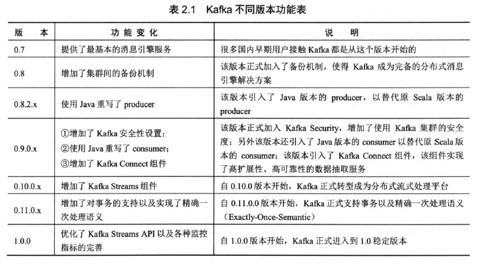
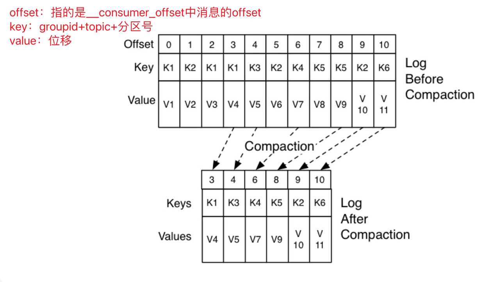
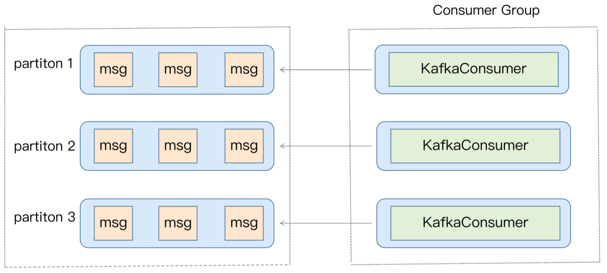
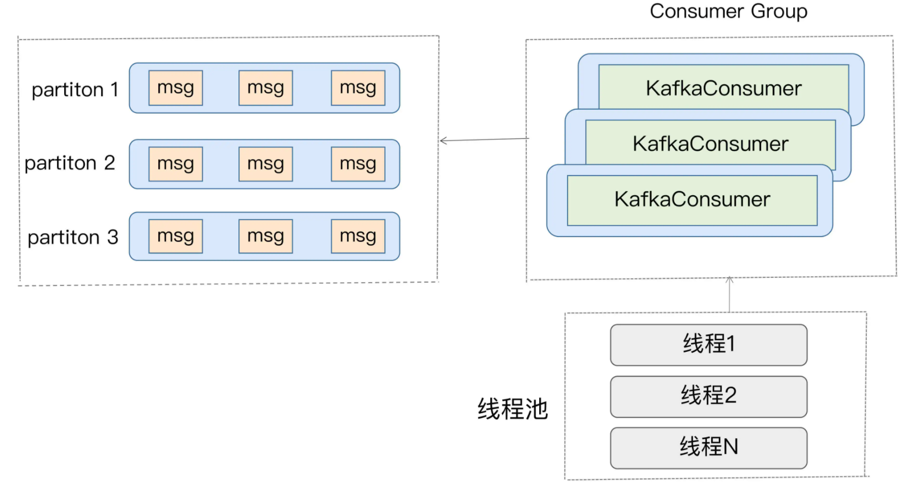
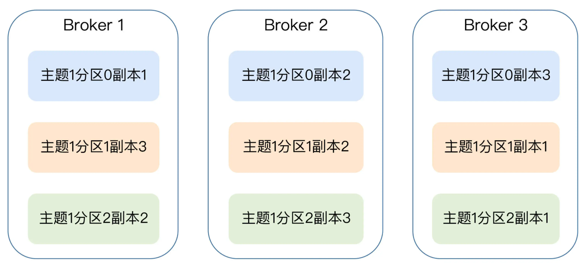
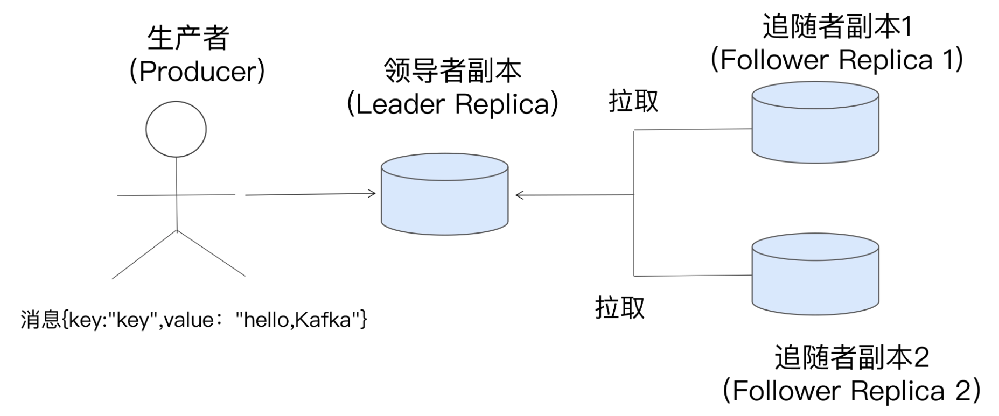
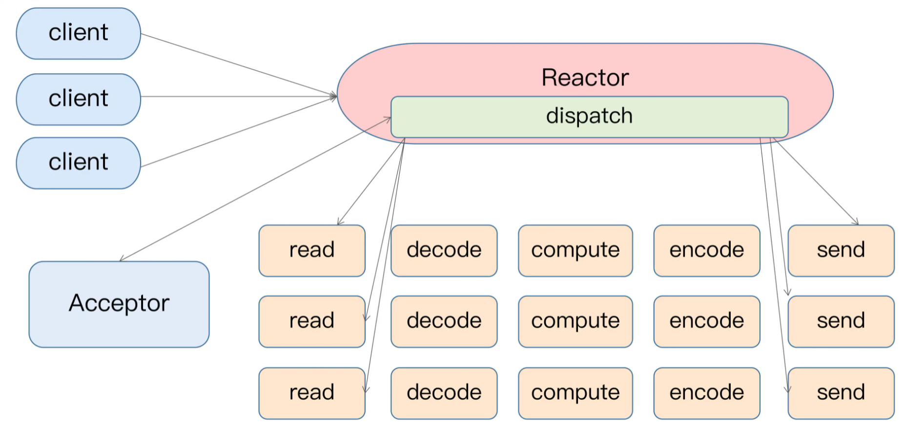
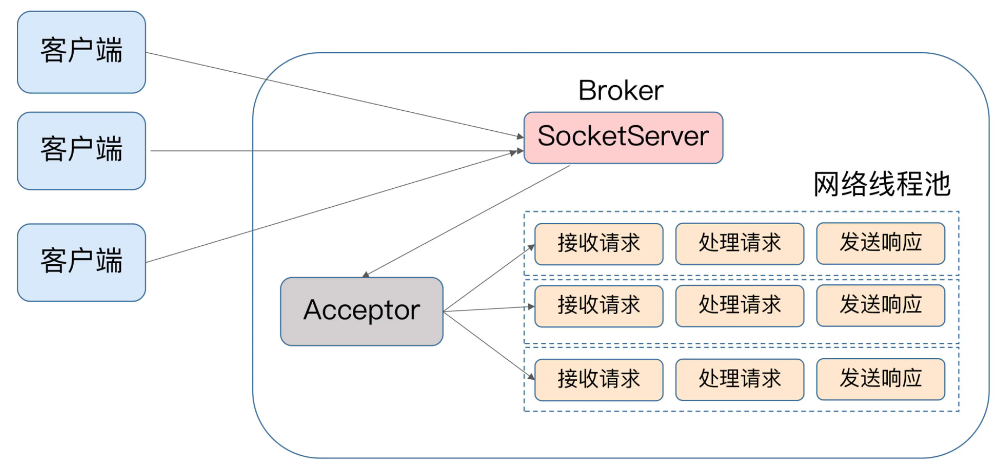
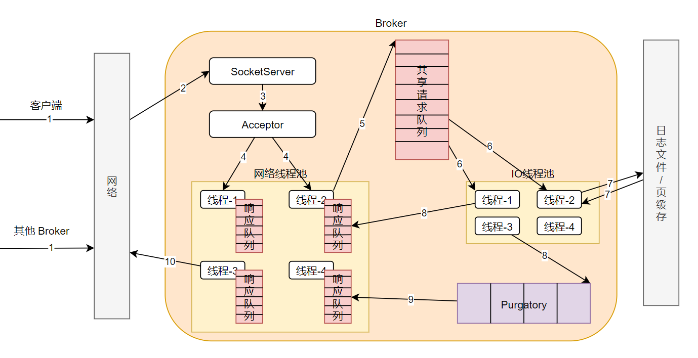

kafka从入门到入土
kafka从入门到入土
基本概念
名词术语
消息：Record。Kafka 是消息引擎嘛，这里的消息就是指 Kafka 处理的主要对象。
主题：Topic。Topic 是承载消息的逻辑容器，在实际使用中多用来区分具体的业务。
分区：Partition。是一个物理概念，可以理解为一个有序不变的消息序列。每个 Topic 下可以有多个 Partition。
分区位移：Offset。表示 Partition 中每条消息的位置信息，这个值是存在消息中的，是一个单调递增且不变的值。
副本：Replica。Kafka 中同一条消息能够被拷贝到多个地方以提供数据冗余，这些地方就是所谓的Replica副本。Replica还分为Leader Replica和Follower Replica，各自有不同的角色划分。Replica是在Partition层级下的，即每个Partition可配置多个Replica实现高可用。
生产者：Producer。向Topic发布新消息的应用程序。
消费者：Consumer。从Topic订阅新消息的应用程序。
消费者位移：Consumer Offset。表示Consumer的消费进度，每个Consumer都有自己的Consumer Offset。
消费者组：Consumer Group。多个Consumer实例共同组成的一个组Group，同时消费多个Partition以实现高吞吐。
重平衡：Rebalance。Consumer Group内某个Consumer实例挂掉后，其他Consumer实例自动重新分配订阅Topic Partiton的过程。Rebalance 是 Kafka 消费端实现高可用的重要手段。

三层消息架构
- 第一层：主题层
Topic- 每个
Topic可以配置M的Partition，而每个Partition又可以配置N个Replica
- 每个
- 第二层：分区层
Partition- 每个
Partition下的N个Replica中，只能有一个充当Leader Replica，Leader Replica负责对外提供服务； - 剩下的
N-1个Replica，都是作为Follower Replica，Follower Replica只是作为数据冗余，不对外提供服务；
- 每个
- 第三层：消息层
- 每个
Partition中包含若干消息，每个消息的Offset（注意不是Consumer Offset）都是从0开始，依次递增；
- 每个
数据持久化（Log）
kafka使用消息日志Log来保存数据，一个Log就是磁盘上一个只能追加写消息的物理文件。
一个Log包含了多个日志段Log Segment，消息其实是被追加写到最新的Log Segment中的；
当写满一个Log Segment的时候，会自动切分一个新的Log Segment中，老的Log Segment就会被封存；
kafka会有一个定时任务，定期检查老的Log Segment是否能够被删除，从而释放磁盘空间；
两种消息模型
点对点peer to peer
- 同一个消息只能被下游的一个
Consumer消费； - kafka实现点对点，用到的是
Consumer Group的概念
发布订阅模型pub/sub
- 我们常用到的其实就是这种发布订阅模型
发展历史和定位
kakka既是一个消息引擎系统，同时又是一个分布式流处理平台；
发展历史
是
Linkedln公司内部的孵化项目。Linkedln一开始是有 数据强实时性处理方面的需求，用了activeMq，但不理想，所以准备自己搞一套。Kafka自诞生伊始是以消息引擎系统的面目出现在大众视野中的。如果翻看0.10.0.0之前的官网说明，你会发现Kafka社区将其清晰地定位为一个分布式、分区化且带备份功能的提交日志Commit Log服务。Kafka在设计之初提供三个方面的特性：- 提供一套 API 实现
Producer和Consumer； - 降低网络传输和磁盘存储开销；
- 实现高伸缩性架构。
- 提供一套 API 实现
后来用的人越来越多，
kafka思考引入了流处理；Kafka社区于0.10.0.0版本正式推出了流处理组件Kafka Streams，也正是从这个版本开始，Kafka正式“变身”为分布式的流处理平台，而不仅仅是消息引擎系统了。
与其他的流处理框架的优点
- 第一点是更容易实现端到端的正确性
Correctness kafka自己对于流式计算的定位
定位
- 消息引擎系统
- 流处理平台
- 分布式存储系统（很少）
kafka版本
发行版本
kafka存在多个不同的发行版本，类似linux系统中的centos，redhat，ununtu等；
| 类型 | 描述 | 优点 | 缺点 | 选择 |
|---|---|---|---|---|
| apache kafka | Apache Kafka 是最“正宗”的 Kafka，是我们学习和使用 Kafka 的基础。 | 优势在于迭代速度快，社区响应度高，使用它可以让你有更高的把控度 | 缺陷在于仅提供基础核心组件，缺失一些高级的特性。 | 如果你仅仅需要一个消息引擎系统亦或是简单的流处理应用场景，同时需要对系统有较大把控度，那么我推荐你使用 Apache Kafka。 |
| Confluent Kafka | Confluent 公司：2014 年，Kafka 的 3 个创始人 Jay Kreps、Naha Narkhede 和饶军离开 LinkedIn 创办了 Confluent 公司，专注于提供基于 Kafka 的企业级流处理解决方案。Confluent Kafka 提供了一些 Apache Kafka 没有的高级特性，比如跨数据中心备份、Schema 注册中心以及集群监控工具等。 | 优势在于集成了很多高级特性且由 Kafka 原班人马打造，质量上有保证； | 缺陷在于相关文档资料不全，普及率较低，没有太多可供参考的范例。 | 如果你需要用到 Kafka 的一些高级特性，那么推荐你使用 Confluent Kafka。 |
| CDH Kafka / HDP Kafka | Cloudera 提供的 CDH 和 Hortonworks 提供的 HDP 是非常著名的大数据平台，里面集成了目前主流的大数据框架，能够帮助用户实现从分布式存储、集群调度、流处理到机器学习、实时数据库等全方位的数据处理，不管是 CDH 还是 HDP 里面都集成了 Apache Kafka，因此我把这两款产品中的 Kafka 称为 CDH Kafka 和 HDP Kafka。 | 操作简单，节省运维成本 | 把控度低，演进速度较慢。 | 如果你需要快速地搭建消息引擎系统，或者你需要搭建的是多框架构成的数据平台且 Kafka 只是其中一个组件，那么我推荐你使用这些大数据云公司提供的 Kafka。 |
版本号
在官网上下载 Kafka 时，会看到这样的版本：
有些人会误将Scala版本看作是Kafka版本，那么就来解释一下这个版本号
2.11/2.12：代表着Kafka源代码的Scala编译器版本2.3.0：才是Kafka的版本号，2代表着大版本号；3代表着小版本号；0代表着修订版本号或补丁
Kafka目前经历了7个大版本，0.7、0.8、0.9、0.10、0.11、1.0和2.0，其中小版本与Patch版本很多就不一一列举
在上面的7个大版本中，在哪个版本进行了重大的改进，来好好看一下
0.7版本
这是个“上古”版本，只提供了基础的消息队列功能，还没有提供副本机制
0.8版本
正式引入了副本机制，能够比较好地做到消息无丢失，新版本Producer API不稳定
0.9版本
添加了基础的安全认证/权限；新版本Producer API在这个版本中算比较稳定，但是0.9版的Consumer API BUG超多，即使提到社区也不会有人管，所以千万别用！
0.10版本
是里程碑式的大版本，因为该版本引入了Kafka Streams，但还不能生产大规模部署使用，自0.10.2.2版本起，新版本Consumer API算是比较稳定了
0.11版本
引入了两个重量级的功能变更：一个是提供幂等性Producer API以及事务（Transaction） API；另一个是对Kafka消息格式做了重构
Producer实现幂等性以及支持事务都是Kafka实现流处理结果正确性的基石，由于刚推出，事务API有一些Bug，另外事务API主要是为Kafka Streams应用服务的，不建议用
这个版本中各个大功能组件都变得非常稳定了，国内该版本的用户也很多，应该算是目前最主流的版本之一了
如果你对1.0版本是否适用于线上环境依然感到困惑，那么至少将你的环境升级到0.11.0.3，因为这个版本的消息引擎功能已经非常完善了
1.0/2.0版本
合并说下1.0和2.0版本吧，因为这两个大版本主要还是Kafka Streams的各种改进，在消息引擎方面并未引入太多的重大功能特性
Kafka Streams的确在这两个版本有着非常大的变化，也必须承认Kafka Streams目前依然还在积极地发展着，如果你是Kafka Streams的用户，至少选择2.0.0版本吧
建议
不论你用的是哪个版本，都请尽量保持服务器端版本和客户端版本一致，否则你将损失很多Kafka为你提供的性能优化收益
kafka生产集群部署
上面了解了kafka的基本概念之后，下面看一下kafka的生产部署，需要怎么部署
同时在本小节之后，我们会搭建一个简单的kafka集群，用于后续的学习
kafka的集群搭建需要考虑一下几个因素
| 因素 | 考量点 | 建议 |
|---|---|---|
| 操作系统 | 操作系统的IO模型 | 将kafka部署在linux上 |
| 磁盘 | 磁盘的IO性能 | 普通环境使用机械硬盘，不需要搭建RAID |
| 磁盘容量 | 根据消息数，留存时间预估磁盘容量 | 实际使用中磁盘预留20%~30%的空间 |
| 带宽 | 根据实际带宽资源和业务SLA预估服务器数量 | 对于千兆网络，建议每台服务器按照700Mbps来计算，避免大流量下的丢包 |
操作系统的选择
操作系统：Windows，Linux，MacOs
选择：Linux
为什么：
- IO模型的使用
- 网络传输效率
- 社区支持度
IO模型的使用
- 阻塞IO
- 非阻塞IO
- IO多路复用
- 信号驱动IO
- 异步IO
每种IO都有自己的典型使用场景，比如：
- Java中的Socket对象的阻塞模式和非阻塞模式就是对应前两种
- Linux系统的select函数就属于IO多路复用
- 大名鼎鼎的epoll介入第三种和第四种之间
- 第五种模型，目前很少有Linux支持，然而Windos却在操作系统中提供了叫IOCP线程模型属于第五种
说完了IO模型，再来看kafka与IO模型的关系
- kafka的底层使用的是java的selector
- java的selector在linux上的实现机制是：epoll
- 而在windos上的实现机制是：select（IO多路复用）
- 所以，将kafka部署在linux机器上，更有优势
网络传输效率
kafka的消息是通过网络传输的，而消息又是保存在磁盘中的，所以kafka非常依赖网络和磁盘的性能；
而linux恰巧有零拷贝（Zero copy）技术，就是当数据在磁盘和网络进行传输的时候，避免昂贵的的内核态数据拷贝从而实现数据的高速传输；
而windos要到java8的60更新版本才有这个功能；
社区的支持度
社区对于windos版的bug不做承诺，基本不会修复；
磁盘的选择
- 选择机械磁盘：kafka多为顺序读写，规避了机械磁盘的弊端，替换成SSD，效益不大
- 不用组RAID：kafka在软件层面通过分区副本保证了高可用，基本不需要磁盘组RAID
磁盘容量的选择
磁盘容量：kafka的日志有保留时间的概念，根据具体的业务量，消息大小，计算好容量；
新增消息量
消息留存时间
平均消息大小
备份数
是否启用压缩（压缩比）
带宽的选择
目前公司普遍的带宽配置都是千兆网（每秒处理1G数据），财大气粗的公司会有万兆网（每秒处理10G数据）；
假设你公司的机房环境是千兆网络，即 1Gbps，现在你有个业务，其业务目标或 SLA 是在 1 小时内处理 1TB 的业务数据。那么问题来了，你到底需要多少台 Kafka 服务器来完成这个业务呢？
千兆网络下，单台机器，假设kafka占用70%的带宽（总要为其他进程保留一些资源），稍等，这只是它能使用的最大带宽资源，你不能让 Kafka 服务器常规性使用这么多资源，故通常要再额外预留出 2/3 的资源，即单台服务器使用带宽 700Mb / 3 ≈ 240Mbps。有了 240Mbps，我们就可以计算 1 小时内处理 1TB 数据所需的服务器数量了。根据这个目标，我们每秒需要处理 2336Mb 的数据，除以 240，约等于 10 台服务器。如果消息还需要额外复制两份，那么总的服务器台数还要乘以 3，即 30 台。
重要的集群参数配置
参数配置分为四个方面：
- broker端参数配置
- topic的参数配置
- JVM的参数配置
- 操作系统的参数配置
broker端参数（静态参数）
静态参数是指修改后需要重启才能生效的参数；
是配置在 kafka安装的这个机器上的。通过静态的配置文件配置的。
存储信息类参数
表示 Broker 使用哪些磁盘
| 参数 | 描述 |
|---|---|
| log.dirs | 【没有默认值的，必须手动指定】指定Broker需要使用的若干个文件目录路径，可配置多个 |
| log.dir | 【一般不用设置，新版本已经取消了】只能配置一个，用来补充上面参数的 |
与ZK相关的参数
ZK负责协调管理并保存 Kafka 集群的所有元数据信息，比如集群都有哪些 Broker 在运行、创建了哪些 Topic，每个 Topic 都有多少分区以及这些分区的 Leader 副本都在哪些机器上等信息
| 参数 | 描述 |
|---|---|
| zookeeper.connect | 负责协调管理并保存 Kafka 集群的所有元数据信息 |
broker连接相关的参数
表示客户端程序或其他 Broker 如何与该 Broker 进行通信的设置
| 参数 | 描述 |
|---|---|
| listeners | 告诉外部连接需要通过什么协议访问指定主机名和端口开放的kafka服务（用于内网访问） |
| Advertised.listeners | 表明这组监听器是broker对外发布的（用于外网访问） |
| host.name/port | 这俩参数是过期参数，忘掉 |
topic管理的参数
| 参数 | 描述 |
|---|---|
| auto.create.topics.enable | 是否允许自动创建topic， 建议设置成false； |
| unclean.leader.election.enable | 是否允许Unclean Leader选举， 建议设置为false； kafka的分区有多个副本，并不是所有的副本都有资格竞争Leader，只有保存数据比较多的才有资格；那如果保存数据比较多的副本全都挂了，那还要不要竞选Leader呢？ 就是这个参数控制的； false表示不竞选，后果：分区不可用； true表示竞选；后果：数据不一致； |
| auto.leader.rebalance.enable | 是否允许定期进行Leader选举；true表示到达一定条件，kafka会自动把leader换了，注意是换掉，而不是选举；即使原来的leaderA运行的好好地，也会给换成leaderB；换leader的代价很大，建议设置为false； |
数据留存方面的参数
| 参数 | 描述 |
|---|---|
| log.retention.{hour|minutes|ms} | 控制一条消息被保留多长时间 |
| log.retention.bytes | Broker为保留消息提供的磁盘容量的大小 |
| message.max.bytes | 控制Broker能够接收的最大的消息大小 |
Topic的参数配置
topic端的参数配置会覆盖broker端的参数配置
Topic 端的参数是在创建Topic的时候，手动设置的。怎么修改topic的参数配置
数据留存方面的参数
| 参数 | 描述 |
|---|---|
| retention.ms | 规定了该topic下数据的保存时长，默认7天，如果配置了，就会覆盖broker端的配置 |
| retention.bytes | 规定了要为该topic预留多少磁盘容量空间 |
| max.message.bytes | 该参数跟 Broker 端的 message.max.bytes 参数的作用是一样的，只不过 max.message.bytes 是作用于某个 topic，而 message.max.bytes 是作用于全局。 |
怎么修改topic的参数配置
创建topic的时候设置
bin/kafka-topics.sh –bootstrap-server localhost:9092 –create –topic transaction –partitions 1 –replication-factor 1 –config retention.ms=15552000000 –config max.message.bytes=5242880
修改topic的时候设置
bin/kafka-configs.sh –zookeeper localhost:2181 –entity-type topics –entity-name transaction –alter –add-config max.message.bytes=10485760
JVM的参数配置
设置kafka的JVM参数，只需要设置环境变量就可以啦。怎么对kafka设置JVM参数
| 参数 | 描述 |
|---|---|
| KAFKA_HEAP_OPTS | JVM堆大小，建议设置为6GB，默认的1GB太小了 |
| KAFKA_JVM_PERFORMANCE_OPTS | 指定垃圾回收器 在java7下：cpu充足，就用CMS；否则使用ParallelGC 在java8下：选择G1 |
怎么对kafka设置JVM参数
指定kafka的环境变量即可
- KAFKA_HEAP_OPTS：指定堆大小
- KAFKA_JVM_PERFORMANCE_OPTS：指定垃圾回收器
$> export KAFKA_HEAP_OPTS=--Xms6g --Xmx6g
$> export KAFKA_JVM_PERFORMANCE_OPTS= -server -XX:+UseG1GC -XX:MaxGCPauseMillis=20 -XX:InitiatingHeapOccupancyPercent=35 -XX:+ExplicitGCInvokesConcurrent -Djava.awt.headless=true
$> bin/kafka-server-start.sh config/server.properties操作系统的参数配置
| 参数 | 描述 |
|---|---|
| 文件描述符限制 | ulimit -n；其实设置这个参数不重要，但是不设置后果很严重，会看到too many open file 的报错； |
| 文件系统类型 | 文件系统类型（ext3，ext4，XFS），XFS的性能强于ext4，ZFS的性能强于XFS（但技术比较新，使用很少） |
| Swappiness | 网上很多文章都提到设置其为 0，将 swap 完全禁掉以防止 Kafka 进程使用 swap 空间。我个人反倒觉得还是不要设置成 0 比较好，我们可以设置成一个较小的值。为什么呢？因为一旦设置成 0，当物理内存耗尽时，操作系统会触发 OOM killer 这个组件，它会随机挑选一个进程然后 kill 掉，即根本不给用户任何的预警。但如果设置成一个比较小的值，当开始使用 swap 空间时，你至少能够观测到 Broker 性能开始出现急剧下降，从而给你进一步调优和诊断问题的时间。基于这个考虑，我个人建议将 swappniess 配置成一个接近 0 但不为 0 的值，比如 1。 |
| 提交时间（系统的刷盘时间） | 提交时间或者说是 Flush 落盘时间。向 Kafka 发送数据并不是真要等数据被写入磁盘才会认为成功，而是只要数据被写入到操作系统的页缓存（Page Cache）上就可以了，随后操作系统根据 LRU 算法会定期将页缓存上的“脏”数据落盘到物理磁盘上。这个定期就是由提交时间来确定的，默认是 5 秒。一般情况下我们会认为这个时间太频繁了，可以适当地增加提交间隔来降低物理磁盘的写操作。当然你可能会有这样的疑问：如果在页缓存中的数据在写入到磁盘前机器宕机了，那岂不是数据就丢失了。的确，这种情况数据确实就丢失了，但鉴于 Kafka 在软件层面已经提供了多副本的冗余机制，因此这里稍微拉大提交间隔去换取性能还是一个合理的做法。 |
分区机制
对于那种大批量机器组成的集群环境，每分钟产生的日志量都能以 GB 数，因此如何将这么大的数据量均匀地分配到 Kafka 的各个 Broker 上，就成为一个非常重要的问题。
我们知道 kafka 的数据，是以 Topic 为概念进行存储的，而topic是一个逻辑概念，真正存放数据的是topic下的partition；partition是物理概念；
一个消息只会保存在一个topic下的一个partition中，不会保存在多个partition中（Replica除外）
那么，为了保证大数据量的均匀分布，其实就是保证一个topic下的数据量均匀的分散在各个partition中；
那么问题来了？
为什么要分区
为什么要Partiton，为什么kafka不直接存储数据，而是要分区存储？为什么要使用Partiton，而不是直接使用topic？
分区的目的是为了负载均衡；或者说分区的目的是为了提高系统的可伸缩性；
- 负载均衡
- 如果没有分区，所有的请求全部在一个
topic上，请求量大的时候，只对一个磁盘进行大量的读写（分钟GB级别的数据量），可能直接就崩了；
- 如果没有分区，所有的请求全部在一个
- 可伸缩性
- 顺丰的
kafka一般是32分区，这样每一个Partition都可以有一个consumer，提升系统的吞吐量；当数据量增长的时候，可以扩Partition，32->64；提升系统的可伸缩性； - 但是一般不建议直接扩
Partition，在顺丰，一般是申请新的topic，然后将消息转发到不同的topic中，变相的实现扩Partition； - 因为
Partition过多，kafka管理起来很困难，没必要增加不必要的消耗；
- 顺丰的
Partition可以实现业务上的功能（消息的顺序问题）
以上说了Partiton存在的必要性
那么既然存在Partiton，怎么保证每个Partiton的数据量的均匀呢，避免数据倾斜？这就涉及到分区的策略
分区策略
分区策略：就是决定消息被发送到哪个分区
| 分区策略 | 描述 |
|---|---|
| 轮训 | 没有指定partitioner.class这个配置的时候，在没有指定key的时候（消息键保留策略），轮训策略是兜底的 |
| 随机 | 使用的很少了，已经被废弃了 |
| 自定义 | 需要显示的配置partitioner.class这个配置，同时需要编写代码； |
| 按消息键保留策略 | 按照key的顺序进行存放 |
默认分区策略：如果指定了key，按照key分发；没有指定key，按照轮训；
怎么设置分区策略
轮训
不需要配置，默认的就是这个。随机
List<PartitionInfo> partitions = cluster.partitionsForTopic(topic);
return ThreadLocalRandom.current().nextInt(partitions.size());按消息键保序策略
List<PartitionInfo> partitions = cluster.partitionsForTopic(topic);
return Math.abs(key.hashCode()) % partitions.size();自定义
比如我想实现：根据 Broker 所在的 IP 地址判断是南方还是北方，实现定制化的分区策略
- 编写一个具体的类实现
org.apache.kafka.clients.producer.Partitioner接口 - 实现其中的两个方法：
partition()和close() - 显式地配置生产者端的参数
partitioner.class为你自己实现类的Full Qualified Name
List<PartitionInfo> partitions = cluster.partitionsForTopic(topic);
return partitions.stream().filter(p -> isSouth(p.leader().host())).map(PartitionInfo::partition).findAny().get()消息压缩（消息格式）
为什么要压缩？
说起压缩compression，我相信你一定不会感到陌生。它秉承了用时间去换空间的经典 trade-off 思想，具体来说就是用 CPU 时间去换磁盘空间或网络 I/O 传输量，希望以较小的 CPU 开销带来更少的磁盘占用或更少的网络 I/O 传输。在 Kafka 中，压缩也是用来做这件事的。
kafka的消息格式
kafka有两大类消息格式，一类是在0.11.0.0版本之前的消息格式（称作V1版本），一个是0.11.0.0版本之后的格式（称作V2版本）；
不管是哪个版本，kafka消息层次都是分为两层：
| V1版本 | V2版本 |
|---|---|
| 消息集合（message set） + 消息（message） | 消息集合（record batch） + 消息（record） |
一个消息集合中包含若干个日志项record item，日志项record item才是真正封装消息的地方；（注意这里不要和日志段（Log Segment）混为一谈）
V2版本对V1版本进行了优化，将日志项record item中一些通用的字段抽出来，放在了消息集合中；
V2版本对V1版本还有一个关于压缩方面的优化
怎么压缩
V2 版本对 V1 版本还有一个关于压缩方面的优化
V1 版本：是把多条消息进行压缩，然后将压缩后的内容放在外层消息的消息体字段中；
V2 版本：是对整个消息集合进行压缩，显然V2版本的压缩效率应该更高；
压缩使用到的是压缩算法：压缩算法的选择
何时压缩
在 kafka 中，压缩可能发生在：Producer端和Broker端
Producer端【一般都是Producer端做压缩】- 在
Producer程序中添加一个配置：compression.type参数 - compression.type=gzip 表示开启gzip压缩
- 在
Broker端- 一般
Broker端不会对Producer发出来的消息进行修改； - 有两个例外情况，会让
Broker对消息重新压缩Broker端和Producer端指定的消息压缩算法不一致（不一致的时候，broker端会对producer端发出来的消息解压然后重新压缩）Broker端发生了消息格式转换：新老版本消息格式（V1版本和V2版本）兼容的问题
- 一般
何时解压缩
consumer端消费到消息的时候，进行解压缩- 解压缩的时候，压缩算法是在消息中，用一个字段标识的，所以
consumer可以拿到消息之后在解压缩
- 解压缩的时候，压缩算法是在消息中，用一个字段标识的，所以
broker端收到producer发出的消息之后，也会解压缩一次，进行消息的校验；
压缩的时机
记住这句话：Producer端压缩，Broker端保持，Consumer端解压缩
压缩算法的选择
一般看两个指标：压缩比 和 压缩/解压缩的吞吐量
GZIP
Snappy
LZ4
zstd
消息丢失
kafka只对 已提交成功 的消息做有限度的持久化保证；
什么是消息丢失
对于Producer来说：消息发不出去，就是丢失；
对于Consumer来说：消息消费不到，就是丢失；
对于Broker来说：不存在丢失，Broker会对 已提交成功 的消息，做有限度的持久化；
什么时候会消息丢失
Producer丢失消息producer.send(msg)因为是异步，fire and forget所以可能会丢消息- 网络抖动、消息不合法被
broker拒收（比如：消息体太大）等都会导致消息发送不成功
Consumer丢失消息- 消费的消息不存在了。一般只有先提交
offset在消费的场景下会发生； - 多线程处理消息的时候，某一个线程消费失败了，但是
offset自动提交了；
- 消费的消息不存在了。一般只有先提交
怎么保证消息不丢失
上面几种丢失消息的场景，怎么避免？
- 【
Producer端】：不要使用producer.send(msg)，而要使用producer.send(msg, callback)。一定要使用带有回调通知的send方法。 - 【
Producer端】：设置acks=all。是个动态值（如果原来有3个Replica，就要写入3个，如果有1个挂了，那就只需要写入2个），表明所有Replica都要接收到消息，该消息才算是“已提交”。这是最高等级的“已提交”定义。 - 【
Producer端】：设置retries为一个较大的值。 表示Producer自动重试。当出现网络的瞬时抖动时，消息发送可能会失败，这里开启自动重试，避免消息丢失。（重试会导致消息乱序吗：会） - 【Broker端】：设置
unclean.leader.election.enable=false。它控制的是哪些Replica有资格竞选分区的Leader。如果一个Replica落后原先的Leader太多，就不要让它竞选，即不允许这种情况的发生。 - 【Broker端】：设置
replication.factor>=3。表示某个分区的Replica总数，最好将消息多保存几份，毕竟目前防止消息丢失的主要机制就是冗余 - 【Broker端】：设置
min.insync.replicas> 1。表示至少写入多少个Replica才算是“已提交”。设置成大于 1 可以提升消息持久性。在实际环境中千万不要使用默认值 1。 - 【Broker端】：确保
replication.factor>min.insync.replicas。如果两者相等，那么只要有一个副本挂机，整个分区就无法正常工作了。我们不仅要改善消息的持久性，防止数据丢失，还要在不降低可用性的基础上完成。推荐设置成replication.factor=min.insync.replicas+1。 - 【
Consumer端】：设置enable.auto.commit=false，采用手动提交位移的方式。就像前面说的，这对于单Consumer多线程处理的场景而言是至关重要的。
举个例子：
比如Replica=3，设置min.insync.replicas=2，acks=all
如果Replica都正常工作：此时acks=all的约束就是写入3个Replica，才算提交成功，此时满足min.insync.replicas=2约束。
如果Replica挂了1个，此时acks=all的约束就是写入2个Replica即可，此时满足min.insync.replicas=2约束。
如果Replica挂了2个，此时acks=all的约束就是写入1个Replica即可，此时不满足min.insync.replicas=2这个下限约束，写入失败。
补充：
设置 ack = all，其实就是需要保证 ISR 集合中所有的 Replica 都写入成功才能返回
公司的生产者的设置
public KafkaProducer24(String brokers, ProduceOptionalConfig extraConfig) {
this.extraConfig = extraConfig == null ? ProduceOptionalConfig.defaultConfig : extraConfig;
Properties props = new Properties();
props.put("bootstrap.servers", brokers);
props.put("key.serializer", "org.apache.kafka.common.serialization.StringSerializer");
props.put("value.serializer", "org.apache.kafka.common.serialization.ByteArraySerializer");
props.put("acks", "默认是Leader Replica收到就行");
props.put("request.timeout.ms", "默认是30000");
props.put("compression.type", "snappy");
props.put("batch.size", "默认是16384");
props.put("linger.ms", "默认是5");
this.producer = new KafkaProducer(props);
}拦截器
Kafka 拦截器自 0.10.0.0 版本被引入后并未得到太多的实际应用，我也从未在任何 Kafka 技术峰会上看到有公司分享其使用拦截器的成功案例。
拦截器是一个小众功能。
Kafka 拦截器分为生产者拦截器和消费者拦截器
生产者拦截器
开发：实现org.apache.kafka.clients.producer.ProducerInterceptor这个接口，这个接口有俩方法
onSend：消息真正发给broker之前onAcknowledgement：消息提交成功之后，在callback之前
消费者拦截器
开发：实现org.apache.kafka.clients.consumer.ConsumerInterceptor这个接口，这个接口有俩方法
onConsume：在消费者真正处理消息之前onCommit：消费者处理完消息，提交offset之后
配置拦截器
拦截器开发完成了，怎么让它生效呢？
当前 Kafka 拦截器的设置方法是通过参数配置完成的
生产者和消费者两端有一个相同的参数，名字叫 interceptor.classes，它指定的是一组类的列表
Properties props = new Properties();
List<String> interceptors = new ArrayList<>();
interceptors.add("com.yourcompany.kafkaproject.interceptors.AddTimestampInterceptor"); // 拦截器1
interceptors.add("com.yourcompany.kafkaproject.interceptors.UpdateCounterInterceptor"); // 拦截器2
props.put(ProducerConfig.INTERCEPTOR_CLASSES_CONFIG, interceptors);生产者与TCP连接
为什么采用TCP作为底层传输协议
TCP 拥有一些高级功能，如多路复用请求和同时轮询多个连接的能力。
多路复用请求：multiplexing request，是将两个或多个数据合并到底层—物理连接中的过程。TCP 的多路复用请求会在一条物理连接上创建若干个虚拟连接，每个虚拟连接负责流转各自对应的数据流。严格讲：TCP 并不能多路复用，只是提供可靠的消息交付语义保证，如自动重传丢失的报文。
生产者是什么时候创建TCP连接的
Properties props = new Properties ();
props.put(“参数1”, “参数1的值”)；
props.put(“参数2”, “参数2的值”)；
……
try (Producer<String, String> producer = new KafkaProducer<>(props)) {
producer.send(new ProducerRecord<String, String>(……), callback);
……
}针对上面的代码，能创建TCP连接的只有两个地方，一是 Producer 实例化的时候；一是 producer.send 的时候；
- Kafka 是在 Producer 实例化的时候与 Broker 建立的 TCP 连接
- 所以，当 producer.send 的时候，其实已经有TCP连接了
扩展：除了在 Producer 实例化的时候与 Broker 建立的 TCP 连接之外，还有没有其他情况？
- 有，有两个情况，也会创建TCP连接
- 元数据更新时，会与元数据中没有连接的 Broker 建立 TCP 连接；
- 每隔5分钟， Producer 会定期从 Broker 中获取元数据信息
- Producer 尝试给一个不存在的 Topic 发送消息时，Broker 会说这个 Topic 不存在，然后 Producer 会请求 Broker 更新元数据信息
- 在消息发送时，如果 Producer 发现与要发送消息的 Topic 所在的 Broker 没有 TCP 连接，就会创建连接；
是怎么创建TCP连接的
在创建 KafkaProducer 实例时，生产者应用会在后台创建并启动一个名为 Sender 的线程，该 Sender 线程开始运行时首先会创建与 Broker 的TCP连接。
Broker有1000个，bootstrap.servers 要配置1000个嘛？ 不需要，因为 Producer 一旦连接到集群中的任一台 Broker，就能拿到整个集群的 Broker 信息。
TCP连接是什么时候被关闭的
- 用户主动关闭，调用 producer.close
- Kafka自动关闭（虽然是producer端设置的参数，但实际上，是broker关闭的TCP连接）：与 Producer 端参数 connections.max.idle.ms 的值有关。默认情况下该参数值是 9 分钟，即如果在 9 分钟内没有任何请求“流过”某个 TCP 连接，那么 Kafka 会主动帮你把该 TCP 连接关闭。用户可以在 Producer 端设置 connections.max.idle.ms=-1 禁掉这种机制。一旦被设置成 -1，TCP 连接将成为永久长连接。
会存在的一些问题
- producer每5分钟获取一些元数据，然后与元数据中没有连接的broker建立TCP连接，然后9分钟后，broker会中断空闲的连接，然后5分钟后，在此建立连接；9分钟后，再次中断连接；
消费者与TCP连接
消费者是什么时候创建TCP连接的
- 生产者是在new KakfaProducer的时候，后台开启一个Sender的线程用来创建TCP连接的；
- 消费者不是在实例化的时候创建的，而是在开始消费消息的时候（consumer.poll）才主动创建TCP连接，准确的说有三个时机
- 发起 FindCoordinator 请求时（连接的brokerId是-1，因为不知道连哪一个）
- 连接协调者的时候（连接的brokerId是
Interger.Max - 协调者所在broker的Id号，为什么这么设计，为了防止连接重用） - 真正消费消息的时候（连接某个topic的某个分区的leader副本所在的broker）
创建多少个TCP连接
会创建三类TCP连接
- FindCoordinator 请求与任意一个 Broker 的 TCP 连接
- 与 Coordinator 的连接，此时消费者才能真正的开始工作
- 与 Partition 所在leader副本的TCP连接，拉取消息，真正开始处理
其中第一类（FIndCoordinator请求与任意一个Broker的连接）会在消费者真正开始处理消息的时候，也就是后面两类TCP连接建立好之后，第一类连接会被关闭掉；
消费者是什么时候关闭TCP连接的
上面说的三类连接，其中第一类连接会在二，三类连接创建好之后，被关闭掉；
二，三类连接的关闭场景有两种：
- 主动关闭，这个不说了
- kafka自动关闭，由 消费者端参数connection.max.idle.ms控制。当超过指定时间，该消费者没有消息消费时，就会被关闭连接（但是如果我们的消费逻辑是while循环的情况，则永远不会被关闭，因为一直与broker保持通信，实现了“长链接”的效果）
可能存在的问题
第一类 TCP 连接仅仅是为了首次获取元数据而创建的，后面就会被废弃掉。最根本的原因是，消费者在启动时还不知道 Kafka 集群的信息，只能使用“-1” 去注册，即使消费者获取了真实的 Broker ID，它依旧无法区分这个“-1”对应的是哪台 Broker，因此也就无法重用这个 Socket 连接，只能再重新创建一个新的连接。
为什么会出现这种情况呢？主要是因为目前 Kafka 仅仅使用 ID 这一个维度的数据来表征 Socket 连接信息。这点信息明显不足以确定连接的是哪台 Broker，也许在未来，社区应该考虑使用 < 主机名、端口、ID> 三元组的方式来定位 Socket 资源，这样或许能够让消费者程序少创建一些 TCP 连接。
也许你会问，反正 Kafka 有定时关闭机制，这算多大点事呢？其实，在实际场景中，我见过很多将 connection.max.idle.ms 设置成 -1，即禁用定时关闭的案例，如果是这样的话，这些 TCP 连接将不会被定期清除，只会成为永久的“僵尸”连接。基于这个原因，社区应该考虑更好的解决方案。
幂等和事务生产者
消息交付可靠性
所谓的消息交付可靠性，是指kafka对Producer和Consumer要处理的消息，提供什么样的承诺：
最多一次：消息只会被发送一次，可能会丢失，绝不会重复至少一次（默认）：发送消息的时候，至少要有一次broker明确告知已经提交的callback，消息可能重复，但不会丢失精确一次：消息不会丢失，也不会重复
幂等和事务的概念
略
幂等生产者
在 Kafka 中，Producer 默认不是幂等性的，但我们可以创建幂等性 Producer。
在没有幂等之前，Producer向一个Partition发送消息，可能会出现同一条消息被多次发送的情况，导致消息重复
在有了幂等之后，Producer向一个Partition发送消息，发送一次和发送多次，由于幂等存在，在当前这一个Partition内消息不会重复
幂等生产者的使用方式
props.put(“enable.idempotence”, true)
或
props.put(ProducerConfig.ENABLE_IDEMPOTENCE_CONFIG， true)设置 enable.idempotence = true 后，Producer 自动升级成幂等性 Producer
如果把 enable.idempotence = true ，则一定要设置ack = all，否则会报错：Must set acks to all in order to use the idempotent producer. Otherwise we cannot guarantee idempotence
其他所有的代码逻辑都不需要改变。
Kafka 自动做消息的重复去重
公司并没有使用幂等生产者，以下是公司的代码
public KafkaProducer24(String brokers, ProduceOptionalConfig extraConfig) {
this.extraConfig = extraConfig == null ? ProduceOptionalConfig.defaultConfig : extraConfig;
Properties props = new Properties();
props.put("bootstrap.servers", brokers);
props.put("key.serializer", "org.apache.kafka.common.serialization.StringSerializer");
props.put("value.serializer", "org.apache.kafka.common.serialization.ByteArraySerializer");
props.put("acks", "默认是Leader Replica收到就行");
props.put("request.timeout.ms", "默认是30000");
props.put("compression.type", "snappy");
props.put("batch.size", "默认是16384");
props.put("linger.ms", "默认是5");
this.producer = new KafkaProducer(props);
}幂等生产者的实现原理
- Producer 在每次启动后，都会向 Broker 申请一个全局一个唯一的 pid ，用来标识本次会话
- V2版本的消息格式增加了 sequence number 字段， producer 每发一批消息， seq 就加1
- broker 在内存中会维护 <pid, topic, partition, seq> 映射，收到消息后检查 seq ，如果：
- new_seq = old_seq + 1 ：正常消息
- new_seq <= old_seq ：重复消息
- new_seq > old_seq + 1 ： 消息丢失
幂等生产者的作用范围
只能实现单Session上的幂等性
- 因为
Producer的每次重启，都会向Broker申请一个新的全局唯一的pid，用来标识本次会话 Producer在不同Session上的pid不一样，是幂等不能跨Session的主要原因。
只能保证单分区上的幂等性
- 因为
Broker端维护的映射是Partiton粒度的，所以只能保证单分区上的幂等性
那么你可能会问，如果我想实现多分区以及多会话上的消息无重复，应该怎么做呢？答案就是事务（transaction）或者依赖事务型 Producer。
事务生产者
如果我想实现多分区以及多会话上的消息无重复，应该怎么做呢？答案就是事务（transaction）或者依赖事务型 Producer。
这也是幂等性 Producer 和事务型 Producer 的最大区别！
在 Kafka 中，Producer 默认不是幂等性的，同时默认也不是事务的。
Kafka 自 0.11 版本开始也提供了对事务的支持，它能保证多条消息原子性地写入到目标分区，同时也能保证 Consumer 只能看到事务成功提交的消息。
事务生产者的使用方式
要想使用kafka的事务，需要同时设置Producer和Consumer
设置Producer
设置事务型 Producer 的方法也很简单，满足两个要求即可：
- 和幂等性 Producer 一样，开启
enable.idempotence = true - 设置 Producer 端参数
transactional.id。最好为其设置一个有意义的名字。 - 在发送消息的时候，需要显示的开启
beginTransaction和提交commitTransaction事务 - 消息1和消息2，要么全部成功，要么全部失败
//创建事务生产者
props.put(“enable.idempotence”, true);
props.put(“transactional.id”, "my-transcation-id-zs")
producer.initTransactions();//初始化事务
try {
producer.beginTransaction();//开启事务
producer.send(record1);//发送消息1
producer.send(record2);//发送消息2
producer.commitTransaction();//提交事务
} catch (KafkaException e) {
producer.abortTransaction();//终止事务
}设置Consumer
- 为什么要设置，因为事务型
Producer即使发送失败了，也会写到kakfa日志中，会被Consumer消费到； - 设置
Consumer的isolation.level参数read_uncommitted：读未提交，这是默认值，表明 Consumer 能够读取到 Kafka 写入的任何消息，不论事务型 Producer 提交事务还是终止事务，其写入的消息都可以读取。read_committed：读已提交，表明 Consumer 只会读取事务型 Producer 成功提交事务写入的消息。当然了，它也能看到非事务型 Producer 写入的所有消息。
事务生产者的实现原理
待补充
消费者组和独立消费者
Kafka 为了实现点对点（同一个消息只能被下游的一个 Consumer 消费），使用了Consumer Group的概念；
那么什么是Consumer Group呢，我们具体看一下
Consumer Group：多个 Consumer 实例组成一组消费某一个 Topic，这个 Topic 下的一条消息只能被组中的一个 Consumer 实例消费；
什么是消费者组
Consumer Group 是 Kafka 提供的可扩展且具有容错性的消费者机制。
组内有多个消费者实例（Consumer Instance），它们共享一个公共的 Group ID。
组内的所有消费者实例（Consumer Instance）一起消费订阅的主题（Subscribed Topics）的所有分区（Partition）。
当然，该 Topic 的每个 Partition 只能由同一个消费者组内的一个 Consumer 实例来消费。
为什么要引入消费者组
为了提升吞吐量，假设 Topic 的消息的生产速率不变，增加消费者实例，就可以提升吞吐量；
消费者的重平衡
当组内的某一个消费者实例挂了，kafka会自动重平衡；将这个死亡的消费者实例原先消费的分区，转移给存活的消费者实例；
后面会详细介绍：重平衡
消费者组的特性是什么
Consumer Group下可以有一个或多个 Consumer 实例。这里的实例可以是一个单独的进程，也可以是同一进程下的线程。在实际场景中，使用进程更为常见一些。Group ID是一个字符串，在一个 Kafka 集群中，它标识唯一的一个 Consumer Group。Consumer Group所订阅的 Topic ，该 Topic 下的某一个 Partition ，只能分配给组内的某一个 Consumer 实例消费。当然，这个 Partition 也可以被其他的 Group 消费。
传统的消息引擎模型
- 点对点：一个消息只能被一个消费者消费到
- 发布订阅：一个 Topic 下的消息，可以被订阅该 Topic 的所有消费者都消费到
- kafka使用消费者组，实现了两种消息引擎模型；
- 如果所有的消费者属于一个消费者组，那就是点对点
- 如果所有的消费者属于不同的消费者组，那就是发布订阅
消费者组的使用方式
待补充，补充一个代码
消费者组是如何维护offset的
对于一个单独的消费者来说，offset就是一个数值；
但是对于一个消费者组来说，因为组内有多个消费者，那么消费者组维护offset是通过一个map来维护的，这个map简单的可以理解为是：Map<TopicPartition,Long>
对于老版本的kafka来说，offset是保存在zk中的，但是后来kafka的开发者发现，offset的更新太过于频繁，频繁的封信会拖慢zk的性能，所以在新版本的kafka中，offset是保存在broker内部的一个特殊的topic中的(__consumer_offset)。
下面我们来看看这个特殊的 Topic：位移主题（__consumer_offset）
独立消费者
在 Kafka 中，消费消息除了使用 消费者组 Consumer Group 外，还有一种消费者会被使用，但是在业务场景中，使用的不多，一般是从在 Kafka 的流处理中。
它是：独立消费者 Standalone Consumer
1、请问Standalone Consumer 的独立消费者一般什么情况会用到
- 很多流处理框架的Kafka connector都没有使用consumer group，而是直接使用standalone consumer，因为group机制不好把控
2、Standalone Consumer 的独立消费者 使用跟普通消费者组有什么区别的。
- standalone consumer没有rebalance，也没有group提供的负载均衡，你需要自己实现。其他方面（比如位移提交）和group没有太大的不同
3、如果使用 Standalone Consumer，是不是也不会发生 rebalance 了？
- standalone consumer就没有rebalance一说了。 它的特点主要是灵活。虽然社区一直在改进rebalance的性能，但大数据量下consumer group机制依然有很多弊病（比如rebalance太慢等），所以很多大数据框架(Spark /Flink)的kafka connector并不使用group机制，而是使用standalone consumer
位移和位移主题
位移在 Kafka 中是一个很重要的概念，分为：消费者位移（Consumer Offset）和分区位移（Offset）：名词术语
消费者位移和分区位移
消费者位移（Consumer Offset）：消费者位移是随时变化的，毕竟它是消费者消费进度的指示器嘛。
分区位移（Offset）：表示的是分区内的消息位置，它是不变的，即一旦消息被成功写入到一个分区上，它的位移值就是固定的了。
举个例子：
一个消息发送到kafka集群，kafka就会给这个消息并一个编号，这个编号就是“分区位移”；而且这个“分区位移”是固定不变的；
当有消费者消费的时候，消费者会记录我自己消费到了哪里，这个就是消费者位移；（消息者位移其实并不是记录在消费者端的，而是记录在zk或者kafka中的）；
分区位移是一个常量，在消息写入到 Partition 中之后，就不变了。所以分区位移没什么好研究的。
我们主要看一看：消费者位移
消费者位移
之前介绍过，消费者组是怎么维护 消费者位移（Consumer Offset） 的，在低版本中，Consumer Offset 是维护在 ZK 中的，在后续版本中，是记录在 Broker 中的一个特殊的 Topic 中，这个 Topic 叫做：位移主题（__consumer_offset）
__consumer_offsets 在 Kafka 源码中有个更为正式的名字，叫位移主题，即 Offsets Topic。
位移主题
为什么会有位移主题
对于老版本的 Kafka 来说，Consumer Offset 是保存在 ZK 中的，但是后来 Kafka 的开发者发现，Consumer Offset 的更新太过于频繁，频繁的更新会拖慢 ZK 的性能，所以在新版本的 Kafka 中，Consumer Offset 是保存在 Broker 内部的一个特殊的 Topic 中的：__consumer_offset
位移主题是什么
是 Kafka 中的一个内部 Topic
这个 Topic 的主要作用是用来管理 Consumer Offset
Consumer Offset 管理机制其实很简单，就是将 Consumer 的位移数据作为一条条普通的 Kafka 消息，发送到 __consumer_offsets 中。
可以这么说，__consumer_offsets 的主要作用是保存 Kafka 消费者的位移信息。
位移主题什么时候创建
当 Kafka 集群中的第一个 Consumer 程序启动时，Kafka 会自动创建位移主题。
位移主题的分区和副本
我们知道 __consumer_offset 虽然是内部 Topic，但是它仍然是一个 Topic ，既然是 Topic ，那么它的分区数和副本是多少呢？
- 分区数：50；由Broker 端参数 offsets.topic.num.partitions指定
- 副本数：3；由Broker 端参数 offsets.topic.replication.factor指定
位移主题中存了什么
存了三类消息
- 位移消息：表示当前消费者组消费的位移信息
- 用于保存 Consumer Group 信息的消息：比较神秘，几乎无法在搜索引擎中搜到。不过，你只需要记住它是用来注册 Consumer Group 的就可以了。
- 用于删除 Group 过期位移甚至是删除 Group 的消息：tombstone 消息，即墓碑消息，也称 delete mark
位移消息
之前说过，Kafka 中有两种消息格式，kafka的消息格式，那么位移主题的消息格式，其实是 Kafka 自定义的特殊消息格式。
既然是自定义的消息格式，也就说明：开发者不能随意的向这个主题发送消息，因为一旦你写入的消息不满足 Kafka 规定的格式，那么 Kafka 内部无法成功解析，就会造成 Broker 的崩溃。
那么这个主题存的到底是什么格式的消息呢？
事实上， Kafka 自定义的位移主题消息格式，其实是一个 KV 结构
K：保存 3 部分内容：<Group ID，主题名，分区号> （即使是单个消费者（Standalone Consumer），也是会有groupid的）
V：Offset
墓碑消息
墓碑消息只出现在源码中而不暴露给你。
它的主要特点是它的消息体是 null，即空消息体。
那么，何时会写入这类消息呢？
一旦某个 Consumer Group 下的所有 Consumer 实例都停止了，而且它们的 Consumer Offset 数据都已被删除时，Kafka 会向位移主题的对应分区写入 tombstone 消息，表明要彻底删除这个 Consumer Group 的信息。
怎么提交offset到位移主题
Kafka Consumer 提交 Offset 时会写入 __consumer_offset 这个 Topic
那 Consumer 是怎么提交位移的呢？
目前 Kafka Consumer 提交位移的方式有两种：自动提交位移和手动提交位移。
自动提交位移
- 设置 Consumer 端参数：enable.auto.commit
- 设置 Consumer 端参数：auto.commit.interval.ms
Properties props = new Properties();
props.put("bootstrap.servers", "localhost:9092");
props.put("group.id", "test");
props.put("enable.auto.commit", "true");
props.put("auto.commit.interval.ms", "2000");
props.put("key.deserializer", "org.apache.kafka.common.serialization.StringDeserializer");
props.put("value.deserializer", "org.apache.kafka.common.serialization.StringDeserializer");
KafkaConsumer<String, String> consumer = new KafkaConsumer<>(props);
consumer.subscribe(Arrays.asList("foo", "bar"));
while (true) {
ConsumerRecords<String, String> records = consumer.poll(100);
for (ConsumerRecord<String, String> record : records)
System.out.printf("offset = %d, key = %s, value = %s%n", record.offset(), record.key(), record.value());
}手动提交位移
- 设置 Consumer 端参数：enable.auto.commit
- 然后我们就需要手动提交位移了，手动提交位移，Kafka提供了两种方式：同步提交方式和异步提交方式
同步提交方式
- KafkaConsumer#commitSync()
- 提交失败了，会自动重试，再次提交，所以会影响消费性能
while (true) {
ConsumerRecords<String, String> records = consumer.poll(Duration.ofSeconds(1));
process(records); // 处理消息
try {
consumer.commitSync();
} catch (CommitFailedException e) {
handle(e); // 处理提交失败异常
}
}异步提交方式
- KafkaConsumer#commitAsync()
while (true) {
ConsumerRecords<String, String> records = consumer.poll(Duration.ofSeconds(1));
process(records); // 处理消息
consumer.commitAsync((offsets, exception) -> {
if (exception != null)
handle(exception);
});
}同步提交方式+异步提交方式
- 同步会出现的问题：是阻塞的，会降低 Consumer 的 TPS ；好处是会自动重试，提交不成功的话，不会拉取新的消息；
- 异步会出现的问题：提交异常的话，不会重试；会导致消息重复消费
- 怎么办呢？结合两者，先使用异步提交一次，如果失败了，finally里使用同步方式
try {
while(true) {
ConsumerRecords<String, String> records = consumer.poll(Duration.ofSeconds(1));
process(records); // 处理消息
commitAysnc(); // 使用异步提交规避阻塞
}
} catch(Exception e) {
handle(e); // 处理异常
} finally {
try {
consumer.commitSync(); // 最后一次提交使用同步阻塞式提交
} finally {
consumer.close();
}
}公司内部使用
在公司内部默认是使用：手动提交位移
if (this.optionalConfig.isTransactional()) {
properties.put("enable.auto.commit", "false");
} else {
properties.put("enable.auto.commit", "true");
}
public class ConsumeOptionalConfig {
//....
private boolean transactional = true;
//....
}
既然公司内部使用的手动提交，那么在哪里提交的位移呢？
protected void commitInit() {
//公司是为：每一个Consumer开了一个线程，后台手动提交位移
this.commitOffsetThread = new TransactionalConsumer.CommitOffsetThread();
this.commitOffsetThread.start();
}
//这是线程真正提交位移的方式，提交到 ZK 的
long nextOffset = currentOffset + 1L;
((ZookeeperConsumerConnector)TransactionalConsumer.this.connector).commitOffsetToZooKeeper(new TopicAndPartition(TransactionalConsumer.this.topic, partition), nextOffset);
this.logger.info(String.format("commit offset: topic:%s, partition:%d, nextOffset: %s", TransactionalConsumer.this.topic, partition, nextOffset));Offset提交导致的问题
上面说了 Offset 的提交，有两种方式：自动提交和手动提交，手动提交又分为：同步提交和异步提交
那么它们会导致什么问题呢？会不会导致消息的丢失消费和消息的重复消费？
自动提交
- 自动提交会导致消息的丢失
- 自动提交会导致消息的重复消费
为什么会导致丢失？是因为消息消费的流程是：Concumer 先 Pull 一部分消息到内存中，然后开始消费，但是需要提交给 Broker 的 Offset 是Pull下来的最大的Offset，由于提交 Offset 是自动的，有可能 Pull 下来的消息还没有消费完，Offset 已经提交了；然后如果从内存中消费出现了问题，那么会导致内存中剩余没消费就永远不会在消费了。
为什么会导致重复？是因为自动提交，默认周期是5秒，如果在第3秒的时候，Broker发生了 Rebalance，那么 Offset 就提交不上去，当 Rebalance 完成之后，这部分数据，还会被在消费一次。
手动提交
- 手动提交方式，可以解决消息的重复消费和丢失问题，因为我消费一个，提交一次Offset
- 同步提交方式，会影响消费端的性能
- 异步提交方式，解决了性能问题，但是消费成功之后，位移提交失败，不会自动重试提交，如果我们在 callback 中手动重试，又有可能导致提交上去的是一个老的 Offset
- 异步+同步方式：每次提交Offset都是异步的，然后在 finally 中同步提交一次，可以完美避免以上问题
怎么避免的呢？消费者 poll 方法内部有维护一个不可见的指针，commitAysnc 方法异步提交不管是否成功，poll 仍然能根据自己维护的指针位移消费数据，最后在finally内用同步方法， 同步最新的 Offset。 这样提交上去的就不是老的 Offset
如果你选择的是自动提交位移，那么就可能存在一个问题：只要 Consumer 一直启动着，它就会无限期地向位移主题写入消息。导致磁盘爆满；因为自动提交位移是后台定时提交的（auto.commit.interval.ms默认是5s）；
那么满了怎么办？满了就删除，怎么删除呢？
位移主题中的过期数据（过期位移）
我们知道所有的位移数据都是保存在 位移主题 中的，如果不删除的话，位移主题就会无限的膨胀
为了避免该主题无限期膨胀。Kafka 会定期的清理位移主题中的数据。
那么什么样的数据被称为过期数据呢？
我们知道位移主题中存了三类消息，这里以 位移消息 为例；
位移消息的消息格式是Map格式，key是 groupid+topic+partition ；value是位移数据
举个例子说：
一个消费者组（假设groupid为：consumer_group_1），这个消费者组消费一个 Topic（假设消费：topic_a）；然后这个 Topic 有3个 Partition；
生产者 源源不断的向 Topic 中写数据，消费者组不停地消费数据，消费一个数据，就向 位移主题 中发一个位移消息；
那么这里的位移消息可能就是下面这样的：
consumer_group_1+topic_a+partition_1 ： 2345
consumer_group_1+topic_a+partition_1 ： 2346
consumer_group_1+topic_a+partition_1 ： 2347
。。。。。
最终，我们就会发现，同一个key就会存在很多数据，而且只有最后一条数据，才是有效的。那么之前的数据，都被称为过期数据；
再次之外，还有一种情况：
在 Broker 端有一个参数：offsets.retention.minutes,这个参数表明了 offset 的保留时间，什么意思呢？
就是说：我们提交到 位移主题 中的消息，并不会永远的保存，在超过了这个配置时间后，Kafka后台有一个线程，就会把这个Offset删掉
这个值一般是 7 天。
也就是说：如果你的消费者7天都没有上线了，或者7天都没有提交 offset 了，Kafka就会把这个消费者组的 位移数据 判定为过期数据。并删除
位移主题中的过期数据（过期位移）清理
在上面我们知道了 位移主题 中的过期数据有两类：
- 一类是：同一个
key的过期数据 - 一类是：超过了
offsets.retention.minutes的过期数据
第一类过期数据，Kafka是怎么清理的呢？
答案就是 Compaction。
国内很多文献都将其翻译成压缩，我个人是有一点保留意见的。
在英语中，压缩的专有术语是 Compression，它的原理和 Compaction 很不相同，我更倾向于翻译成压实，或干脆采用 JVM 垃圾回收中的术语：整理。
它的原理很简单：就是将：同一个 <Group ID，主题名，分区号> 的 Offset 进行压实整理，只保留最新的
图中位移为 0、2 和 3 的消息的 Key 都是 K1。Compact 之后，分区只需要保存位移为 3 的消息，因为它是最新发送的。
Kafka 提供了专门的后台线程定期地巡检待 Compact 的主题，看看是否存在满足条件的可压缩数据。这个后台线程叫 Log Cleaner。
第二类过期数据，Kafka是怎么清理的呢？
上面说到，Kafka有一个后台线程：Log Cleaner。
这个线程除了会清理第一类过期数据之外，还会清理第二类过期数据。
很多实际生产环境中都出现过位移主题无限膨胀占用过多磁盘空间的问题，如果你的环境中也有这个问题，我建议你去检查一下 Log Cleaner 线程的状态，通常都是这个线程挂掉了导致的。
Kafka 定期自动删除过期位移的条件就是，组要处于 Empty 状态（消费者组的状态机）。因此，如果你的消费者组停掉了很长时间（超过 7 天），那么 Kafka 很可能就把该组的位移数据删除了
位移提交失败怎么办
一般的失败，API会自动重试；
但是有一个异常叫做 CommitFailedException，这个异常抛出，说明位移的提交出现了大问题，需要人工介入了
那么这个异常是啥意思呢？什么时候会产生呢？产生了之后要怎么处理呢？
什么是 CommitFailedException
Commit cannot be completed since the group has already rebalanced and assigned the partitions to another member.
This means that the time between subsequent calls to poll() was longer than the configured max.poll.interval.ms, which typically implies that the poll loop is spending too much time message processing.
You can address this either by increasing max.poll.interval.ms or by reducing the maximum size of batches returned in poll() with max.poll.records.
翻译过来就是：
本次提交位移失败了，原因是消费者组已经开启了 Rebalance 过程，并且将要提交位移的分区分配给了另一个消费者实例。
出现这个情况的原因是：你的消费者实例连续两次调用 poll 方法的时间间隔超过了期望的 max.poll.interval.ms 参数值。这通常表明，你的消费者实例花费了太长的时间进行消息处理，耽误了调用 poll 方法。
你可以通过：增加期望的时间间隔 max.poll.interval.ms 参数值 或者 减少 poll 方法一次性返回的消息数量，即减少 max.poll.records 参数值。
那么什么时候会抛出这个异常呢？
从源代码方面来说，CommitFailedException 异常通常发生在手动提交位移时，即用户显式调用 KafkaConsumer.commitSync() 方法时。
从使用场景来说，有两种典型的场景可能遭遇该异常。
场景一
当消息处理的总时间超过预设的 max.poll.interval.ms 参数值时，Kafka Consumer 端会抛出 CommitFailedException 异常。
模拟异常产生：
…
Properties props = new Properties();
…
props.put("max.poll.interval.ms", 5000);
consumer.subscribe(Arrays.asList("test-topic"));
while (true) {
ConsumerRecords<String, String> records =
consumer.poll(Duration.ofSeconds(1));
// 使用Thread.sleep模拟真实的消息处理逻辑
Thread.sleep(6000L);
consumer.commitSync();
}场景二
- 消费者组 Consumer Group 和 独立消费者 Standalone Consumer 拥有了相同的 group.id，当独立消费者程序手动提交位移时，Kafka 就会立即抛出 CommitFailedException 异常，因为 Kafka 无法识别这个具有相同 group.id 的消费者实例，于是就向它返回一个错误，表明它不是消费者组内合法的成员。
- 这种情况一般出现在很多部门消费同一个 Kafka 集群导致的，各个部门的消费者命名重复了，导致相同的 group.id
当前当异常出现了，我们应该怎么办呢？
怎么解决问题，要先知道问题是怎么出现的。
比如在 场景一 中，我们知道产生问题的原因是：两次 poll() 方法调用的间隔超过了 max.poll.interval.ms
那么就简单了，针对 场景一 ，我们可以：
- 调大 max.poll.interval.ms 这个间隔时间，默认时间是 5分钟
- 减少每次 poll() 拉取的消息数量：我们知道一次 poll() 方法，默认拉 500 条，因为拉取的太多了，消费的慢，所以导致两次 poll() 时间间隔太长
- 接第二条，‘消费的慢’，那我们就提到消息速率，优化代码，减少每条消息的处理时间，提高TPS
- 除了优化代码，提交消费速度，还可以使用多线程，提高消费速度，但是要注意多线程下的位移提交问题
针对场景二呢，上面四个办法就不能用了，不过一般大公司下，消费者都是需要申请的，如果重复了，一般是申请不了的。
多线程消费
Kafka Java Consumer 的单线程设计
为什么 Kafka Java Consumer 要设计成单线程，看一下发展历史就明白了了
在目前的 KafkaConsumer 的API出现之前，有一个 Scala 版本的 Consumer 的API，这组 Scale 的API 被称为老版本 Consumer
在老版本 Consumer 中，Consumer 的设计是多线程的架构：
- 每个 Consumer 实例在内部为所有订阅的 Topic 分区，创建对应的消息获取线程（就是一个分区一个线程），称为 Fetcher 线程
- 老版本的 Consumer 同时也是阻塞的，Consumer 实例启动后，内部会创建阻塞式的消息获取迭代器
那么为什么后来变成单线程的了呢？
- 主要是因为老版本的 Consumer 是阻塞的
- 而在大部分业务场景下，比如对数据的过滤，连接，分组，就不能是阻塞式的。
- 所以在新版的 Consumer 下，Kafka 设计了 单线程+轮训 的机制
采用单线程还有另外一个考虑
- 就是单线程可以简化 Consumer 的设计，在任何编程语言中，单线程都比多线程更方便维护
不过，虽然 Consumer 的设计是单线程的，但是并不意味着我们就不能多线程了。
虽然 KafkaConsumer 的类的设计是单线程的，而且不是线程安全的。但是只是说明 拉取消息 的逻辑是单线程的
但是消息拉取之后，怎么处理消息，完全是由开发者决定的，此时可以手动开发多线程进行消费
多线程方案
总体来说有两种方案。
方案一
消费者程序启动多个线程，每个线程维护专属的 KafkaConsumer 实例，负责完整的消息获取、消息处理流程。
简单地说：一个线程负责一个分区
方案二
消费者程序使用单或多线程获取消息，同时创建多个消费线程执行消息处理逻辑
简单的说：一个或多个线程负责拉取消息，多个线程负责处理消息
方案对比
| 方案 | 优点 | 缺点 |
|---|---|---|
| 方案一 | 方便实现 | 占用更多的系统资源 |
| 方案一 | 速度快，没有线程间的交互开销 | 线程数受限于 Topic 的分区数（最多一个分区一个线程），扩展性差 |
| 方案一 | 易于维护分区间的消息顺序 | 线程自己拉取消息，自己处理消息，可能导致超时，引发Rebalance |
| 方案二 | 可独立扩展获取消息线程数和处理消息线程数 | 实现难度高 |
| 方案二 | 伸缩性好 | 难以维护分区内的消息消费顺序 |
| 方案二 | 处理链路长，不利于 Offset 的提交管理 |
代码实现
方案一
- 这段代码创建了一个 Runnable 类，表示执行消费获取和消费处理的逻辑。每个 KafkaConsumerRunner 类都会创建一个专属的 KafkaConsumer 实例。在实际应用中，你可以创建多个 KafkaConsumerRunner 实例，并依次执行启动它们，以实现方案 1 的多线程架构。
public class KafkaConsumerRunner implements Runnable {
private final AtomicBoolean closed = new AtomicBoolean(false);
private final KafkaConsumer consumer;
public void run() {
try {
consumer.subscribe(Arrays.asList("topic"));
while (!closed.get()) {
ConsumerRecords records =
consumer.poll(Duration.ofMillis(10000));
// 执行消息处理逻辑
}
} catch (WakeupException e) {
// Ignore exception if closing
if (!closed.get()) throw e;
} finally {
consumer.close();
}
}
// Shutdown hook which can be called from a separate thread
public void shutdown() {
closed.set(true);
consumer.wakeup();
}方案二
- 这段代码最重要的地方是最后一行：当 Consumer 的 poll 方法返回消息后，由专门的线程池来负责处理具体的消息。调用 poll 方法的主线程不负责消息处理逻辑，这样就实现了方案 2 的多线程架构。
private final KafkaConsumer<String, String> consumer;
private ExecutorService executors;
...
private int workerNum = ...;
executors = new ThreadPoolExecutor(
workerNum, workerNum, 0L, TimeUnit.MILLISECONDS,
new ArrayBlockingQueue<>(1000),
new ThreadPoolExecutor.CallerRunsPolicy());
...
while (true) {
ConsumerRecords<String, String> records =
consumer.poll(Duration.ofSeconds(1));
for (final ConsumerRecord record : records) {
executors.submit(new Worker(record));
}
}
..重平衡与协调者
什么是重平衡
Rebalance 本质上是一种协议，规定了一个 Consumer Group 下的所有 Consumer 如何达成一致，来分配订阅 Topic 的每个分区。
比如某个 Group 下有 20 个 Consumer 实例，它订阅了一个具有 100 个分区的 Topic。正常情况下，Kafka 平均会为每个 Consumer 分配 5 个分区。这个分配的过程就叫 Rebalance。
什么时候会重平衡
- Consumer Group 内 Consumer实例 数量发生变化（新增或减少）；
- Consumer Group 订阅的 Topic 数发生变化；
- Consumer Group 订阅的 Topic 的 Partition 数量发生变化
重平衡策略
- 举例：比如组内有2个消费者，这个组消费 TopicA 和 TopicB ,其中 Consumer-1 消费 TopicA，Consumer-2 消费 TopicB，当该 Consumer Group 新订阅一个 TopicC 的时候，会不会 Consumer-1 消费到 TopicB，Consumer-2 消费到 TopicA
Kafka 有三种策略保证重平衡后的公平
Rnage 分配策略
Range分配策略是面向每个 Topic 的，首先会对同一个 Topic 里面的 Partition 按照序号进行排序，并把消费者线程按照字母顺序进行排序。然后用分区数除以消费者线程数量来判断每个消费者线程消费几个分区。如果除不尽，那么前面几个消费者线程将会多消费一个分区。
RoundRobin策略
RoundRobin策略的原理是将 Consumer Group 内所有 Consumer 以及订阅的所有 Topic 的 Partition 按照字典序排序，然后通过轮询算法逐个将分区以此分配给每个消费者。 使用RoundRobin分配策略时会出现两种情况：
如果同一消费组内，所有的消费者订阅的消息都是相同的，那么 RoundRobin 策略的分区分配会是均匀的。
如果同一消费者组内，所订阅的消息是不相同的，那么在执行分区分配的时候，就不是完全的轮询分配，有可能会导致分区分配的不均匀。如果某个消费者没有订阅消费组内的某个 topic，那么在分配分区的时候，此消费者将不会分配到这个 topic 的任何分区。
Sticky分配策略
Sticky分配策略，这种分配策略是在 Kafka 的 0.11.X 版本才开始引入的，是目前最复杂也是最优秀的分配策略。 Sticky分配策略的原理比较复杂，它的设计主要实现了两个目的：
分区的分配要尽可能的均匀；
分区的分配尽可能的与上次分配的保持相同。 如果这两个目的发生了冲突，优先实现第一个目的。
什么是协调者Coordinator
所谓协调者，在 Kafka 中对应的术语是 Coordinator，它专门为 Consumer Group 服务，负责为 Group 执行 Rebalance 以及提供位移管理和组成员管理等。
协调者 coordinators 是协调管理 Consumer Group 的一个程序，运行在broker上的
每一个broker在启动时都会启动 coordinator 组件（coordinator程序），也就是说每个 Broker 都有具备称为 Coordinator 的能力
具体来讲，Consumer 端应用程序在提交位移时，其实是向 Coordinator 所在的 Broker 提交位移。
同样地，当 Consumer 应用启动时，也是向 Coordinator 所在的 Broker 发送各种请求，然后由 Coordinator 负责执行消费者组的注册、成员管理记录等元数据管理操作。
消费者组是怎么找到自己的coordinator的
既然 Coordinator 是运行在 Broker上 的一个程序，那么一个消费者组，是怎么找到自己的 Coordinator 的呢？
在消费者与TCP连接这一节中，我们知道消费者在启动的时候，会创建三类 TCP 连接
- 第一类：与负载最小的 Broker 创建连接，发送 FIndCoordinator 请求，希望该 Broker 告诉自己谁是我的协调者；
- 第二类：与 Coordinator 创建TCP连接，加入组，分配方案，位移获取和提交等
- 第三类：与 要消费的分区的副本所在 Broker 创建 TCP 连接，真正开始消费数据
所以，消费者组找到自己的 Coordinator 是在第一类 TCP 请求中找到的
那么 具体是怎么找到的呢？是通过之前说过的 __consumer_offset 这个主题来找的
分为两步
- 获取当前 Consumer Group 的 groupid，然后hash得到hash值；
- 获取__consumer_offset 的分区数，默认是50
- 计算 ：abs ( hash % 50 ) = 分区号
- 然后，找到这个分区号的 leader 副本所在的 broker ；这个broker就是这个消费者的coordinator
重平衡的缺点
- 会STW（stop the world）：消费者会全部停止消费
- 时间太慢了，几百个消费者重平衡一次，要几个小时
- Rebalance 的设计是要求所有 Consumer 实例共同参与，全部重新分配所有分区
- 在 Rebalance 过程中，所有 Consumer 实例都要参与，所以在整个过程中都不能消费任何消息，因此它对 Consumer 的 TPS 影响很大
避免消费者组重平衡
首先，明确一个概念，目前Rebalance的弊端（慢，STW）这2个弊端，社区是没有办法解决的；
针对Rebalance的效率低的情况，社区采用了StickyAssignor策略来提升性能；
既然无法解决，那我们只能尽量避免，怎么避免呢？就要从导致Rebalance发生的三种情况来看
- 组成员数量发生变化（99%的Rebalance都是这个原因）
- 订阅主题数量发生变化（一般是程序开发者主动操作，无法避免）
- 订阅主题的分区数发生变化（一般是程序开发者主动操作，无法避免）
组成员数量发生变化，变化分为两种，一种是增加，一种是减少
- 增加：一般都是程序开发者主动操作，比如为了提升topic的消费速率，无法避免
- 减少：如果是主动停掉的，那自不必说，无法避免；
- 减少：不是主动停掉的，是被 Coordinator 错误地认为“已停止”从而被“踢出”Group。如果是这个原因导致的 Rebalance，我们就不能不管了。
什么时候coordinator会认为consumer实例已停止
- Coordinator 没有收到 Consumer 的心跳，就会让 Consumer 离组，重新 Rebalance
- Consumer 端有个参数，叫 session.timeout.ms，默认10秒；
- Coordinator 在10s内没有收到 Consumer 的心跳，就Rebalance
- 心跳是consumer主动给coordinator的，那么多久一次呢？是由参数：heartbeat.interval.ms控制的；
- 推荐配置：session.timeout.ms=6s，heartbeat.interval.ms=2s：要保证 Consumer 实例在被判定为“dead”之前，能够发送至少 3 轮的心跳请求
- Consumer 实例在一定时间内消费不完已经 pull() 下来的消息，就会主动离组，重新Rebalance
- Consumer 端有个参数，max.poll.interval.ms 参数，默认5分钟
- 一个consumer在5分钟内，没有消费完拉取的数据，就Rebalance
- consumer端的GC情况
standalone consumer 就没有 rebalance 一说了。 它的特点主要是灵活。
虽然社区一直在改进rebalance的性能，但大数据量下consumer group机制依然有很多弊病（比如rebalance太慢等）
所以很多大数据框架(Spark /Flink)的kafka connector并不使用group机制，而是使用standalone consumer
怎么排查生产是否重平衡过多
主动去排查：去找Coordinator所在的broker日志，如果经常发生rebalance，会有类似于”(Re)join group” 之类的日志
被动排查：一般 Rebalance 过多，会降低消费者能力，间接的就会出现消息堵，可以配置相关告警
重平衡核心全流程
重平衡是怎么做到的？
在 Kafka 中，每个 Consumer 都会通过心跳线程，定期的向 Coordinator 汇报自己的状态；
同时 Coordinator 也会通过心跳线程，告诉 Consumer ：我收到了你的汇报；
如果 Consumer 超时没有汇报；说明这个 Cnnsumer 有问题了，此时 Coordinator 就会开启重平衡
Coordinator 会通过心跳线程，向这个 Consumner 所在的 Group 下的所有 Consumer，发送消息：REBALANCE_IN_PROGRESS
当 Consumer 收到这种消息之后，就知道要开启重平衡了
而 Coordinator 具体是怎么实现重平衡的呢？
其实是通过控制 Consumer Group 的状态来完成重平衡的。这是理解重平衡的基础。
下面我们就来看看 消费者组的状态机，这是理解重平衡的基础；
消费者组的状态机
消费者组的状态主要有以下 五个：
| 状态 | 说明 |
|---|---|
| Empty | 组内没有任何成员，但消费者可能存在已经提交的数据，并且未过期：位移主题中的过期数据（过期位移） |
| Dead | 组内没有任何成员，Coordinator 已经把这个消费者组的元数据信息删除了 |
| PreparingRebalance | 消费者组准备开启重平衡，此时所有成员都要重新申请加入组 |
| CompletingRebalance | 消费者组下的所有成员都已经加入，等待Leader分配方案，老版本中这个状态叫：AwatingSync |
| Stable | 消费者组的稳定状态，表示重平衡已经完成，可以正常开启消费了 |
stateDiagram
direction LR
Empty-->Dead: 组信息过期被删除
Empty-->PreparingRebalance:准备开启rebalance
PreparingRebalance-->Dead:位移主题分区Leader发生变化
PreparingRebalance-->Empty:组内所有成员离组
PreparingRebalance-->CompletingRebalance:有成员入组
CompletingRebalance-->Dead:位移主题分区Leader发生变化
CompletingRebalance-->PreparingRebalance:成员加入或离开
CompletingRebalance-->Stable:Leader完成分配
Stable-->Dead:位移主题分区Leader发生变化
Stable-->PreparingRebalance:心跳过期/成员离组/新成员加入
%% 给状态添加样式
classDef badBadEvent fill:green,color:white,font-weight:bold,stroke-width:2px,stroke:yellow
class Empty badBadEvent
class PreparingRebalance badBadEvent
class CompletingRebalance badBadEvent
class Stable badBadEvent
class Dead badBadEvent
一个消费者组最开始是 Empty 状态
当重平衡过程开启后，它会被置于 PreparingRebalance 状态等待成员加入
之后变更到 CompletingRebalance 状态等待分配方案
最后流转到 Stable 状态完成重平衡
当有新成员加入或已有成员退出时，消费者组的状态从 Stable 直接跳到 PreparingRebalance 状态，此时，所有现存成员就必须重新申请加入组。
当所有成员都退出组后，消费者组状态变更为 Empty
重平衡流程
场景一：新成员入组
sequenceDiagram
成员1->>协调者: 心跳请求：你好协调者，我是组内的成员1，我还活着
协调者-->>成员1: 心跳响应：你好成员1，已收到
成员2->>协调者: joinGroup请求：你好协调者，我请求加入组，我要消费的是主题是 B
成员1->>协调者: 心跳请求：你好协调者，我是组内的成员1，我还活着
协调者-->>成员1: 心跳响应：你好成员1，REBALANCE_IN_PROGRESS,重平衡，你需要重新入组
成员1->>协调者: joinGroup请求：你好协调者，我请求加入组，我要消费的是主题是 A
协调者-->>成员2: joinGroup响应：你好成员2，你已成功入组，你是这组的Leader
这组的订阅信息有：{成员1->主题A，成员2->主题B}
协调者-->>成员1: joinGroup响应：你好成员1，你已成功入组，当前组的Leader是成员2，请等待分配方案
成员1->>协调者: syncGroup请求：你好协调者，我是成员1，等待分配方案
成员2->>协调者: syncGroup请求：你好协调者，我是成员2，也是这个组的Leader
以下是我的分配方案：{成员1->主题A分区0，成员2->主题B分区0}
协调者-->>成员1: syncGroup响应：你好成员1，你负责消费主题A的0分区
协调者-->>成员2: syncGroup响应：你好成员2，你负责消费主题B的0分区
成员1->>协调者: 心跳请求：你好协调者，我是组内的成员1，我还活着
协调者-->>成员1: 心跳响应：你好成员1，已收到
成员2->>协调者: 心跳请求：你好协调者，我是组内的成员2，我还活着
协调者-->>成员2: 心跳响应：你好成员2，已收到
场景二：组成员主动离组
sequenceDiagram
成员1->>协调者: 心跳请求：你好协调者，我是组内的成员1，我还活着
协调者-->>成员1: 心跳响应：你好成员1，已收到
成员2->>协调者: 心跳请求：你好协调者，我是组内的成员2，我还活着
协调者-->>成员2: 心跳响应：你好成员2，已收到
成员1->>协调者: leaveGroup请求：你好协调者，我是组内的成员1，申请主动离组
协调者-->>成员1: leaveGroup响应：你好成员1，已收到
成员2->>协调者: 心跳请求：你好协调者，我是组内的成员2，我还活着
协调者-->>成员2: 心跳响应：你好成员2，REBALANCE_IN_PROGRESS,重平衡，你需要重新入组
成员2->>协调者: joinGroup请求：你好协调者，我请求加入组，我要消费的是主题是 B
协调者-->>成员2: joinGroup响应：你好成员2，你已成功入组，你是这组的Leader
这组的订阅信息有：{成员2->主题B}
成员2->>协调者: syncGroup请求：你好协调者，我是成员2，也是这个组的Leader
以下是我的分配方案：{成员2->主题B分区0}
协调者-->>成员2: syncGroup响应：你好成员2，你负责消费主题B的0分区
成员2->>协调者: 心跳请求：你好协调者，我是组内的成员2，我还活着
协调者-->>成员2: 心跳响应：你好成员2，已收到
场景三：组成员崩溃离组
sequenceDiagram
成员1->>协调者: 心跳请求：你好协调者，我是组内的成员1，我还活着
协调者-->>成员1: 心跳响应：你好成员1，已收到
成员2->>协调者: 心跳请求：你好协调者，我是组内的成员2，我还活着
协调者-->>成员2: 心跳响应：你好成员2，已收到
note left of 成员2: 成员2此时已离线
协调者->>协调者: 发现成员2已经很长时间没有汇报了
成员1->>协调者: 心跳请求：你好协调者，我是组内的成员1，我还活着
协调者-->>成员1: 心跳响应：你好成员1，REBALANCE_IN_PROGRESS,重平衡，你需要重新入组
成员1->>协调者: joinGroup请求：你好协调者，我请求加入组，我要消费的是主题是 A
协调者-->>成员1: joinGroup响应：你好成员1，你已成功入组，你是这组的Leader
这组的订阅信息有：{成员1->主题A}
成员1->>协调者: syncGroup请求：你好协调者，我是成员1，也是这个组的Leader
以下是我的分配方案：{成员1->主题A分区0}
协调者-->>成员1: syncGroup响应：你好成员1，你负责消费主题A的0分区
成员1->>协调者: 心跳请求：你好协调者，我是组内的成员1，我还活着
协调者-->>成员1: 心跳响应：你好成员1，已收到
场景四：重平衡时协调者对组内成员提交位移的处理
sequenceDiagram
成员1->>协调者: 心跳请求：你好协调者，我是组内的成员1，我还活着
协调者-->>成员1: 心跳响应：你好成员1，已收到
协调者->>协调者: 此时发现需要重平衡
成员1->>协调者: 心跳请求：你好协调者，我是组内的成员1，我还活着
协调者->>成员1: 心跳响应：你好成员1，REBALANCE_IN_PROGRESS,重平衡，你需要重新入组
成员1->>成员1: 必须赶在超时时间内提交位移
note right of 成员1 : 赶在超时时间内提交位移
成员1->>协调者: 提交位移请求：你好协调者，我要提交的位移是：{....}
协调者->>成员1: 提交位移响应：你好成员1，位移数据已收到
note right of 成员1 : 如果提交失败了，这部分数据在重平衡之后就会被重新消费
重平衡的一些问题
joingroup时等待所有消费者上报订阅信息，协调者通过什么判断所有消费者都已经上报了？
- join group时也是有一个总的超时时间的（取所有member最大的rebalance超时时间），靠这个作为判断是否进入到下一阶段的阈值。
- 如果在这次 Rebalance 期间，有 消费者 超时没有上报信息，那么这个消费者会被排除在这轮 Rebalance 之外
如果在超时时间之后，排除在外的 消费者 此时上报了信息，怎么办？
- 相当于 新成员入组，重新 Rebalance
副本机制
我们之前谈到过，Kafka 是有 Topic 概念的，而每个 Topic 又进一步划分成若干个 Partition。
每个 Partition 配置有若干个 Replica，Replica 的概念实际上是在 Partition 层级下定义的
什么是副本
所谓副本（Replica），本质就是一个只能追加写消息的提交日志。
同一个 Partition 下的所有 Replica 保存有相同的消息序列，这些 Replica 分散保存在不同的 Broker 上，从而能够对抗部分 Broker 宕机带来的数据不可用。
在实际生产环境中，每台 Broker 都可能保存有各个 Topic 下不同 Partition 的不同 Replica，因此，单个 Broker 上存有成百上千个 Replica 的现象是非常正常的。
下图展示的是一个有 3 台 Broker 的 Kafka 集群上的副本分布情况。
从这张图中，我们可以看到，主题 1 分区 0 的 3 个副本分散在 3 台 Broker 上，其他主题分区的副本也都散落在不同的 Broker 上，从而实现数据冗余。
副本之间数据是怎么同步的
我们知道 Replica 是用来冗余数据的，同一个 Partiton 下的所有 Replica 的数据都应该是一模一样的，顺序都是一样的
那么这么多的 Replica，是怎么进行 Replica 之间的数据同步的呢？
Kafka使用的解决方案：就是采用基于领导者（Leader-based）的副本机制
- 在 Kafka 中，副本分成两类：领导者副本（Leader Replica）和追随者副本（Follower Replica）。每个分区在创建时都要选举一个 Leader Replica，剩余的是 Follower Replica
- Kafka 的副本机制比其他分布式系统要更严格一些。在 Kafka 中，Follower Replica 是不对外提供服务的。所有的读写请求都必须由 Leader Replica所在的 Broker负责处理。而 Follower 的任务只有一个：就是从 Leader 异步拉取消息，并写入到自己的提交日志中，从而实现与 Leader 的同步。
- 当 Leader Replica 挂掉了，或者说 Leader Replica 所在的 Broker 宕机时，Kafka 依托于 ZK 进行新的 Leader Replica 的选举
你一定要特别注意上面的第二点，即追随者副本是不对外提供服务的。
原因归咎于两点：方便 Read-your-writes ，同时方便实现单调读（Monotonic Reads）
Follower不提供服务的优点
有两个好处
方便实现“Read-your-writes”
所谓 Read-your-writes，顾名思义就是，当你使用生产者 API 向 Kafka 成功写入消息后，马上使用消费者 API 去读取刚才生产的消息。
举个例子，比如你平时发微博时，你发完一条微博，肯定是希望能立即看到的，这就是典型的 Read-your-writes 场景。如果允许追随者副本对外提供服务，由于副本同步是异步的，因此有可能出现追随者副本还没有从领导者副本那里拉取到最新的消息，从而使得客户端看不到最新写入的消息。
方便实现单调读（Monotonic Reads）
什么是单调读呢？就是对于一个消费者用户而言，在多次消费消息时，它不会看到某条消息一会儿存在一会儿不存在。
如果允许追随者副本提供读服务，那么假设当前有 2 个追随者副本 F1 和 F2，它们异步地拉取领导者副本数据。倘若 F1 拉取了 Leader 的最新消息而 F2 还未及时拉取，那么，此时如果有一个消费者先从 F1 读取消息之后又从 F2 拉取消息，它可能会看到这样的现象：第一次消费时看到的最新消息在第二次消费时不见了，这就不是单调读一致性。但是，如果所有的读请求都是由 Leader 来处理，那么 Kafka 就很容易实现单调读一致性。
现在我们知道了 Replica 的同步机制，和 Follower Replica 不对外提供服务的原因，接下来还有两个问题，我们一一来看：
Kafka 是怎么保证 Replica 的数据一致性的
当 Leader Replica 挂掉之后，Kafka 是怎么进行选举新的 Leader Replica 的
怎么保证 副本数据一致性
我们知道 Kafka 的 Partition 有很多个 Replica
Replica 分为 Leader Replica 和 Follower Replica
Leader Replica 对外提供读写服务，Follower Replica 只是从 Leader Replica 异步同步数据，不对外提供任何服务；
那么，Kakfa是怎么保证这些 Replica 内的数据是一致的呢？
In-Sync Replicas（ISR）
既然 Follower Replica 是异步的方式，从Leader Replica 同步数据的，那么就一定会存在延迟；
就像 Mysql 的主从一样，主要涉及到数据同步，就一定会有延迟，无外乎：延迟的大小是多少。
Kafka 知道这个延迟是无法避免的，所以，Kafka 维护了一个集合，这个集合中保存的是：与Leader同步的Follower；
什么是与Leader同步的Follower？有同步的Follower，难道还有不同步的Follower？
- 是的，有同步的，就有不同步的。
- Kafka 有自己一套判定条件，只要 Follower Replica 满足了这个判定条件，Kafka 就认为这个 Follower 是同步的。就会放进 ISR 集合；
- 这个条件就是：replica.lag.time.max.ms，表示 Follower 副本能够落后 Leader 副本的最长时间间隔，默认是10S
- 也就是说：当 Follower 与 Leader 的同步时间差，在10秒内，Kafka就认为这个 Follower 是同步的。否则就是不同步的
- ISR 集合有什么用的，主要是用来选举新的 Leader Replica 的，后面会说
ISR 是一个动态调整的集合，当 Follower 落后于 Leader ，并且落后时间大于replica.lag.time.max.ms，Kafka 就会将这个 Follower 踢出 ISR；
同样的，当一个落后的 Follower 最终追上了 Leader ，Kafka 会将这个 Follower 在加入 ISR；
ISR是怎么变化的
Kafka 在启动的时候会开启两个任务
一个任务用来定期地检查是否需要调整 ISR 集合，这个周期是replica.lag.time.max.ms的一半，默认5秒；
当检测到 ISR 集合中有失效副本时，就会收缩 ISR 集合，当检查到有 Follower 的 HighWatermark （高水位）追赶上 Leader 时，就会扩充ISR。
除此之外，当 ISR 集合发生变更的时候。还会将变更后的记录缓存到 isrChangeSet 中
另一个任务会周期性地检查 isrChangeSet，如果发现这个 isrChangeSet 有新的变更记录，那么它会在 ZK 中持久化一个节点。
然后因为 Controller（Kafka 控制器） 在这个 ZK 节点的路径上注册了一个Watcher，所以它就能够感知到ISR的变化，并向它所管理的broker发送更新元数据的请求。最后删除该ZK节点。
Leader 副本天然就在 ISR 中
极端的情况：ISR 包含全部的 Replica，也有可能 ISR 中一个 Replica 都没有，如果一个都没有的话，说明 Leader 都挂了，此时就需要选举新的 Leader了。
怎么进行选举新的 Leader Replica
选举的时候，是通过 Controller（Kafka控制器）来处理的。 Coordinator（协调者）只是消费者组用来重平衡的；这两个不是一个概念；
当 ISR 不为空的时候，则选择其中一个作为新Leader，新的ISR则包含当前 ISR 中所有幸存的 Replica。
当 ISR 为空的时候，此时幸存的 Replica 都是非同步副本，也就是说：都是和 老的 Leader Replica 差距比较大的 Replica，如果此时从这些 非同步副本 中选举一个作为 Leader 的话，就会有消息丢失的风险；如果不选举，那就是 Kafka 服务不可用了。
当 ISR 为空的时候，如果进行选举，则这个选举叫做： Unclean 领导者选举，Broker 端参数 unclean.leader.election.enable 控制是否允许 Unclean 领导者选举
如果开启了 Unclean 领导者选举 ，相当于选择了可用性，牺牲了一致性；如果不选举，相当于选择了一致性，牺牲了可用性
建议不要开启，毕竟我们还可以通过其他的方式来提升高可用性。如果为了这点儿高可用性的改善，牺牲了数据一致性，那就非常不值当了。
请求是怎么被处理的
kafka的请求分类
之前，我们了解到 Kafka 是使用 TCP 进行通信，在TCP的基础上，Kafka定义了属于自己的请求协议：
比如常见的 PRODUCE 请求是用于生产消息的，FETCH 请求是用于消费消息的，METADATA 请求是用于请求 Kafka 集群元数据信息的等等
截止到 2.3 版本，总共有 45 种，在这 45 种请求中，可以分为两类：
数据类请求：Kafka 社区把 PRODUCE 和 FETCH 这类请求称为数据类请求。
控制类请求：Kafka 社区把 LeaderAndIsr、StopReplica 这类请求称为控制类请求。
处理请求的方式
在传统的开发设计中，对一个请求的处理，很自然的就可以想到下面两种方式
同步处理
服务端收到一个消息，立即开始处理，处理完成后返回
//伪代码
while (true) {
Request request = accept(connection);
handle(request);
}这个方法实现简单，但是有个致命的缺陷，那就是吞吐量太差。由于只能顺序处理每个请求，因此，每个请求都必须等待前一个请求处理完毕才能得到处理。这种方式只适用于请求发送非常不频繁的系统。
异步处理
既然同步的方式效率差， 那就用异步的方式
//伪代码
while (true) {
Request = request = accept(connection);
Thread thread = new Thread(() -> {
handle(request);});
thread.start();
}这个方法反其道而行之，完全采用异步的方式。系统会为每个入站请求都创建单独的线程来处理。这个方法的好处是，它是完全异步的，每个请求的处理都不会阻塞下一个请求。但缺陷也同样明显。为每个请求都创建线程的做法开销极大，在某些场景下甚至会压垮整个服务。
Kafka 是如何处理请求的
Kafka 使用 Reactor 模式来处理请求
什么是Reactor模式
Reactor 模式是 JUC 包的作者 Doug Lea 的作品，真不愧是大神。
简单来说，Reactor 模式是事件驱动架构的一种实现方式，特别适合应用于处理多个客户端并发向服务器端发送请求的场景。
Reactor 模式的架构如下图所示，图来自 Doug Lea 的PPT：https://gee.cs.oswego.edu/dl/cpjslides/nio.pdf：
多个 Client 客户端会发送请求给到 Reactor。
Reactor 有个请求分发线程 Dispatcher ，也就是图中的 Acceptor 线程，它会将不同的请求下发到多个工作线程中处理。
Dispatcher 是 Reactor 模式的一个概念，它的实现是：Acceptor 线程，所以它俩是指同一个东西。
Acceptor 线程只是用于请求分发，不涉及具体的逻辑处理，非常得轻量级，因此有很高的吞吐量表现。
而工作线程可以根据实际业务处理需要任意增减，从而动态调节系统负载能力。
Kafka 的Reactor模式
Kafka 的 Broker 端有个 SocketServer 组件，类似于 Reactor 模式中的 Dispatcher。
它也有对应的 Acceptor 线程和一个工作线程池，只不过在 Kafka 中，这个工作线程池有个专属的名字，叫网络线程池。
Kafka 提供了 Broker 端参数 num.network.threads，用于调整该网络线程池的线程数。
num.network.threads 的默认值是 3，表示每台 Broker 启动时会创建 3 个网络线程，专门处理客户端发送的请求。
在Reactor模式下怎么处理请求
上图，其中 1-7 步骤是处理请求， 7-10 是响应请求
1、客户端或者其他Broker发起请求，这里的请求可能是 数据类请求，也可能是 控制类请求
2、请求发送到 Broker，会由 SocketServer 组件开始处理
3、SocketServer 组件（Acceptor线程）开始处理
4、SocketServer 组件（Acceptor线程）会将请求分发到网络线程池，这是一个很轻量级的工作
5、网络线程池中的某个线程接收到请求，但是这个线程并不会开始处理，而是将当前请求发送到共享请求队列
6、Broker 端还有一个IO线程池，会不停的从共享请求队列中获取请求，这才是真正的开始处理请求
- Broker 端参数 num.io.threads 控制了这个线程池中的线程数。
- 目前该参数默认值是 8，表示每台 Broker 启动后自动创建 8 个 IO 线程处理请求
- 你可以根据实际硬件条件设置此线程池的个数
7、这个请求如果是 PRODUCE 请求，就写入日志；如果是 FETCH 请求，就从磁盘或者页缓存中读取数据
在Reactor模式下怎么响应请求
上图，其中 1-7 步骤是处理请求， 7-10 是响应请求
7、这个请求如果是 PRODUCE 请求，就写入日志；如果是 FETCH 请求，就从磁盘或者页缓存中读取数据
8、如果当前这个请求可以直接返回，就会找到当时发送这个请求的线程，然后返回到这个线程的响应队列中
什么是可以直接返回的请求？
再讲什么是可以直接返回的请求之前，先了解一个什么是不可以直接返回的请求？
不可以直接返回的请求，比如设置了 acks=all 的 PRODUCE 请求
一旦设置了 acks=all，那么该请求就必须等待 ISR 中所有副本都接收了消息后才能返回
此时处理该请求的 IO 线程就必须等待其他 Broker 的写入结果
这就是不能直接返回的请求。
相反的，就是可以直接返回的请求
响应队列是网络线程池中每个线程专属的吗？
是的。
请求队列是所有网络线程共享的，而响应队列则是每个网络线程专属的。
这么设计的原因就在于，Dispatcher 只是用于请求分发而不负责响应回传，因此只能让每个网络线程自己发送 Response 给客户端，所以这些 Response 也就没必要放在一个公共的地方。
怎么找到当时发送这个请求的线程呢？
在源码中，有这部分代码逻辑：RequestChannel 类的 sendResponse 方法
// 找出response对应的Processor线程，即request当初是由哪个Processor线程处理的
val processor = processors.get(response.processor)
// 将response对象放置到对应Processor线程的Response队列中
if (processor != null) {
processor.enqueueResponse(response)
}
8、如果当前这个请求是不可以直接返回的，就会将当前这个请求暂存到 Purgatory
什么是不可以直接返回的请求？
不可以直接返回的请求，比如设置了 acks=all 的 PRODUCE 请求
一旦设置了 acks=all，那么该请求就必须等待 ISR 中所有副本都接收了消息后才能返回
此时处理该请求的 IO 线程就必须等待其他 Broker 的写入结果
这就是不能直接返回的请求。
相反的，就是可以直接返回的请求
Purgatory 是什么？
Purgatory 的组件，这是 Kafka 中著名的“炼狱”组件。
它是用来缓存延时请求（Delayed Request）的。
所谓延时请求，就是那些一时未满足条件，不能立刻处理的请求。
9、等 Purgatory 中暂存的请求，可以返回的时候，会找到当时发送这个请求的线程，返回到这个线程的响应队列中
怎么知道是可以返回的时候？
举个例子：比如设置了 acks=all 的 PRODUCE 请求
一旦设置了 acks=all，那么该请求就必须等待 ISR 中所有副本都接收了消息后才能返回
此时处理该请求的 IO 线程就必须等待其他 Broker 的写入结果
此时才可以返回
10、网络线程池的线程，会将自己响应队列中的响应数据，通过网络传输回去。
控制类和数据类请求分离
在本小节开头，就介绍过：Kafka 的请求分类两类
数据类请求：Kafka 社区把 PRODUCE 和 FETCH 这类请求称为数据类请求。
控制类请求：Kafka 社区把 LeaderAndIsr、StopReplica 这类请求称为控制类请求。
在了解了 Kafka 是怎么处理请求的流程之后，思考这么一个问题：
如果当前 共享请求队列 中，已经积压了很多的数据，IO线程正在马不停蹄的处理，此时我们发送一个请求：要求一个 Replica 下线。
此时：这个要求 Replica 下线的请求是优先处理，还是顺序处理？
如果是优先处理，那共享请求队列中积压的数据，怎么办？
如果是顺序处理，如果等待的时间很长很长，Replica 一直无法下线怎么办？
所以我们需要把 控制类请求 和 数据类请求 分开处理。
这就是 控制类和数据类请求分离
场景
举一个具体的场景：
假设我们有个主题只有 1 个分区，该分区配置了 2 个副本
其中 Leader 副本保存在 Broker 0 上，Follower 副本保存在 Broker 1 上
假设 Broker 0 这台机器积压了很多的 PRODUCE 请求
此时你如果使用 Kafka 命令强制将该主题分区的 Leader、Follower 角色互换
那么 Kafka 内部的控制器组件（Controller）会发送 LeaderAndIsr 请求给 Broker 0，显式地告诉它，当前它不再是 Leader，而是 Follower 了
而 Broker 1 上的 Follower 副本因为被选为新的 Leader，因此停止向 Broker 0 拉取消息
不分离的现象
如果 控制类请求 和 数据类请求 不分离
LeaderAndIsr 请求（ Leader、Follower 角色互换）就会放在 共享请求队列 的后面
如果 共享请求队列 积压了很多，我们就要等很长很长时间，才能处理到这个 控制类请求
很显然，这不是我们想要的结果
分离的现象
如果 控制类请求 和 数据类请求 分离
那么在 LeaderAndIsr 发送之前积压的 PRODUCE 请求就都无法正常完成了。
这是我们想要的结果吗？
我不知道这是不是我们想要的结果，但这是目前 Kafka 的处理方式
Kafka 会优先处理 LeaderAndIsr 请求，Broker 0 就会立刻抛出 NOT_LEADER_FOR_PARTITION 异常，快速地标识这些积压 PRODUCE 请求已失败
怎么设计分离
现在我们知道 Kafka 会优先处理 控制类请求，如果是你来设计，你会怎么让 Kafka 优先处理 控制类请求呢？
方案一：
在 Broker 中实现一个优先级队列，并赋予控制类请求更高的优先级。
这是很自然的想法，所以我本以为社区也会这么实现的，但后来我这个方案被清晰地记录在“已拒绝方案”列表中。
拒绝的原因在于，它无法处理请求队列已满的情形。当请求队列已经无法容纳任何新的请求时，纵然有优先级之分，它也无法处理新的控制类请求了
方案二：
直接将 控制类请求 替换 共享请求队列中 的最前面的数据，这样就可以优先处理控制类请求了，处理完控制类请求，再将这个数据类请求插队到队头；
这个方案是网友分享的，当然，Kafka 社区也没有采用这个方案
那么 Kafka 是怎么做的呢？
Kafka是怎么分离的
那么，社区是如何解决的呢？
很简单，Kafka 社区实现了两套一模一样的 Reactor模型
一个用来处理 数据类型请求，一个用来处理 控制类请求；实现了两类请求的分离。
也就是说，Kafka Broker 启动后，会在后台分别创建两套网络线程池和 IO 线程池的组合，它们分别处理数据类请求和控制类请求。
至于所用的 Socket 端口，自然是使用不同的端口了，你需要提供不同的 listeners 配置，显式地指定哪套端口用于处理哪类请求。
kafka控制器
关于高水位和Leader Epoch的讨论
高水位和低水位分别是什么
HW
LEO（Log End Offet）
LSO（Log Stable Offset）：事务生产者
问题
为什么kafka不像mysql那样允许追随者副本（follower replica）对外提供只读服务？
kafka是怎么做到 提供一套 API 实现生产者和消费者？
kafka是怎么做到 降低网络传输和磁盘存储开销；
kafka是怎么做到 实现高伸缩性架构。
kafka为什么快，为什么高吞吐？
- 消息日志（Log）只能追加写，避免了随机IO，改成了顺序IO，大大提高了写能力；
你觉得 Kafka 未来的演进路线是怎么样的？如果你是 Kafka 社区的“掌舵人”，你准备带领整个社区奔向什么方向呢？
想你是一家创业公司的架构师，公司最近准备改造现有系统，引入 Kafka 作为消息中间件衔接上下游业务。作为架构师的你会怎么选择合适的 Kafka 发行版呢
kafka每天 1 亿条 1KB 大小的消息，保存两份且留存两周的时间，需要多大的磁盘空间？
如果需要kafka1小时内处理1TB的业务数据，在千兆网络下，需要多少台kafka机器？
kafka怎么实现的故障转移？
kafka是怎么保障大数据量均匀的分布在各个Broker上的？
kafka的零拷贝技术是什么？
broker端收到消息也会解压缩，进行消息校验，那么零拷贝还有用嘛？
consumer可以先提交offset，在处理消息嘛？
kafka的producer是在producer实例化的时候，创建的TCP连接，那么这个时候，producer都不知道要往那个topic发消息，那么就不知道要连接到哪个broker？kafka是怎么做的呢？
kafka在建立TCP连接的步骤中，有没有可以优化的地方，目前社区做的不好的地方？
丰网的kafka的消费者重复注册是怎么做的？是同一个消费者实例的多个线程，还是同一个消费者类，注册了多个bean；
重试机制会导致消息乱序吗？
- 重试机制不会重新计算Partition信息
- 重试机制会导致消息乱序，但是可以通过 max.in.flight.requests.per.connection=1 来避免，但是会导致吞吐量下降
- max.in.flight.requests.per.connection：表示限制客户端在单个连接上能够发送的未响应请求的个数；
- 设置为 1 表示：broker收到一个请求之后，在响应之前，是不会接收别的请求的
消息的分区位移是什么时候写入的？
如果一个消息写入失败了，Producer 有重试，它的Offset是新的，还是老的？
Consumer设置自动提交位移，有一个提交频率，具体的流程是怎么提交的，如果消费到了Producer重试的消息，Offset会怎么样？